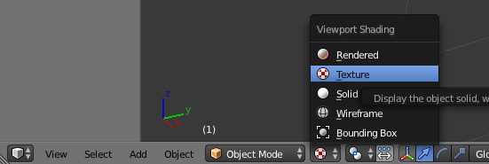
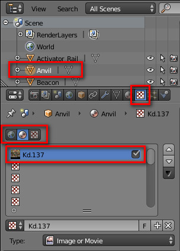
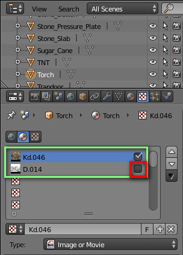
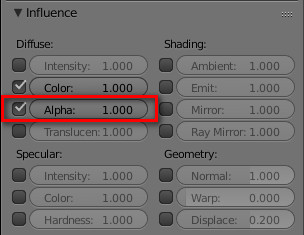
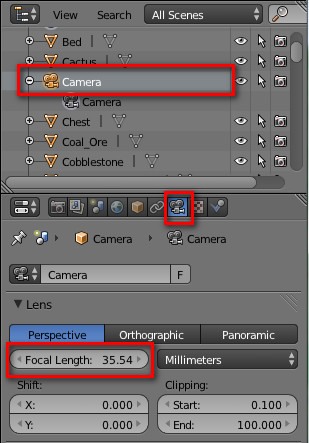
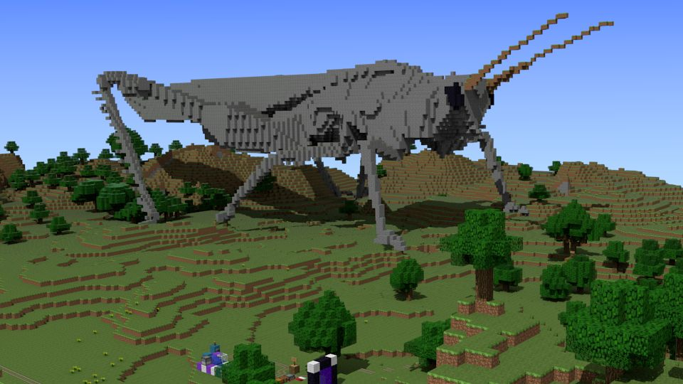
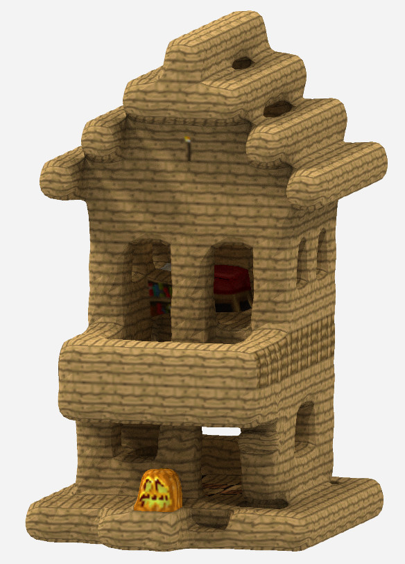
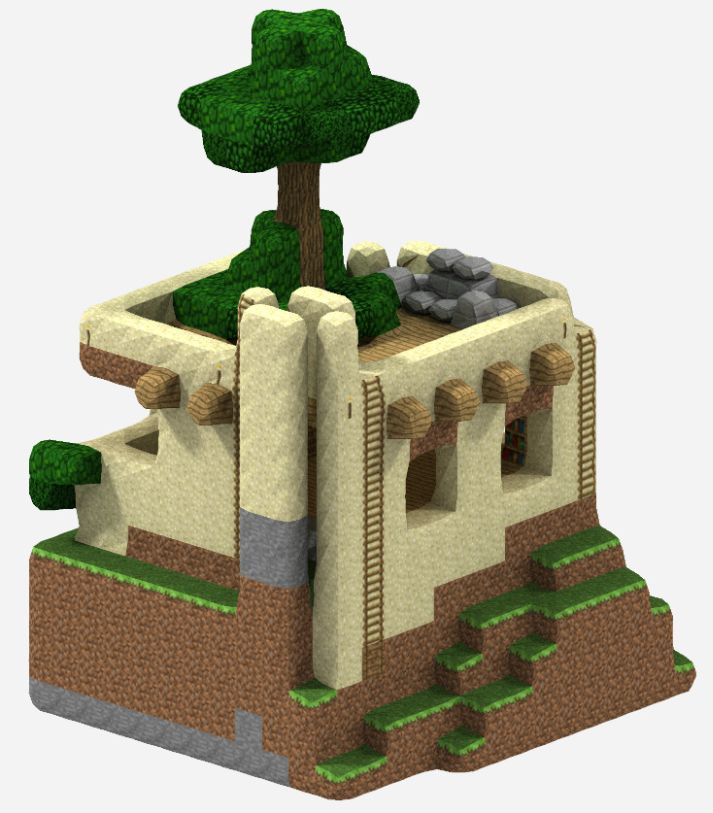

Documentation
See the downloads page for an overview and quick-start guide.
Subscribe to the Mineways mailing list - it's for only important announcements, such as new version releases.
Check the bug list if you have problems; let me know if you're still stuck. The program is open source and is based on the (great) mapping program minutor written by Sean Kasun - his work gave me a huge head start. Mineways is a superset of his mapper, with a model exporter and other features added. I wrote this program just for fun, I'm not associated with Shapeways or Mojang. There are other print services besides Shapeways that work with Mineways, such as Sculpteo, i.materialise and Ponoko, as well as home 3D printers.
Normally you can just hit "OK" on the export dialog and things will work fine. Read on if you want to understand how to make your models less expensive, use different texture packs, and otherwise tailor you want to see printed out. What follows is extensive documentation about each part of the export and print process. If you don't want to wade through it all, at least search this page for the phrase "Key tip", as these bits are particularly useful.
- How I Make an Export - what steps I go through.
- Troubleshooting - for if something goes wrong.
- Installation - simple!
- Mapping - lots of ways to change the view and what you see.
- Color Schemes - change object colors or make them invisible.
- Selecting a Region - define a 3D box in your world for export.
- Exporting Models - basics of exporting.
- "My Model's Too Expensive!" - how to keep it cheap.
- Export Options - the various export options shown on the giant dialog.
- Exporting to 3D print - in-depth coverage of 3D print options.
- Import Settings - reading back in previous export settings.
- TileMaker - how to make your own terrainExt.png files.
- Rendering Tips - help for importing to different renderers.
- Exporting to Sketchfab - how to make your creations immediately available to all.
- 3D Print Services - Shapeways, Sculpteo, and more
- Shapeways - two key tricks to use the site effectively.
- Sculpteo - some options you may not know.
- Zebra Imaging - make a color hologram.
- Looking Glass Factory - make a Lucite block with your model embedded in it.
- Related Resources - model viewers, worlds to try out, etc.
- Stuff to Print - where to get models and worlds.
- Other Packages - other model exporters and related software.
- Minecraft Pocket Edition Support - how to open one of these worlds in Mineways.
- Keyboard Shortcut Keys - along with quick descriptions of various features.
- Block Types Supported - how various block types are exported.
- Known Bugs - and workarounds, so check here if you have a problem loading, saving, etc.
- Version History
- Wishlist
- Links - useful links to Mineways-related information.
How I Make an Export
I'm assuming you have basic knowledge from the quick-start guide or guide at MinecraftEdu and can find options on the output dialog. If you need more information on a process, just follow the links or search this page for the term.For me it starts with determining whether the model is printable at all: if it has elements that are floating in the air, then I either don't print it, or will add blocks to hold these elements up in the air when printed. If there are very thin columns holding up larger elements, I have to guess whether these thin columns will be able to support the weight or will break. Even trees will often break off, because their trunks are too thin to stand up to the cleaning process.
If printable, I then decide what part of a model to print. If there's interesting construction below ground level, how deep do I want to go? Should the model get printed as two or more pieces, so I can see the rooms inside? If the model is symmetrical, should I print just half or a quarter of the model and show the interior that way?
Once I've figured out what to capture, there are then a few steps I walk through:
- First I do a rough selection of the volume of the model. I select an area, export, and view by double-clicking on the WRL file produced. I then adjust the bounds by grabbing the border of the selection in Mineways with the right-mouse and dragging, and use the "[" and "]" keys to adjust the bottom's height, then use Control-X to instantly re-export. I export again, then in MeshLab hit Control-R to reload the model. Lather, rinse, repeat until I like the result I'm seeing in preview.
- I'll check the price and see if it's affordable. If so, great. If it's too high, then I try out the ideas in this section. My mantra in all this is "smaller is cuter is cheaper". Complexity is free when doing 3D printing, cost is based entirely on the number and size of the blocks, not their positions. The downside of smaller block sizes is that you can't see the textures on them as well. The upside is that you get fine details that are more impressive; larger blocks look easier to make.
- If I get the warning that there are floating pieces, I check them out in the preview (there's a special debug mode if they're not obvious) and usually just remove them by cranking up the "Delete floating objects" number, as shown in this tutorial. This number is low by default, 16, as otherwise large pieces could be discarded without the user realizing it. 16 was chosen mostly so that floating bits of trees overlapping into the scene would be discarded. You can crank this number to 999999 and only the largest connected object will be saved.
- Since cost is based on the model's weight (volume), my main thought is "how can I get rid of any blocks I'll never see?" The major part of the work is then making sure unseen rooms are sealed off, so that Mineways can do its job removing them. The easiest way to do this is to add torches to the entrances of rooms and then use the "Seal off entrances" option on the export dialog. What should then happen is that these sealed rooms get filled with glass, then the hollowing process will delete them. Note that you can play in and change your world while also running Mineways, just hit the "R" key in Mineways to reload your world with your changes.
- Do I want to remove glass? If I want to look inside the building and it has glass in the windows, the glass should go (it doesn't print as transparent). Using a color scheme removes the glass, as described in this video tutorial (note that if you use glass panes, you should remove those, too). The downside of removing glass is that costs usually go up, since rooms won't then get removed by hollowing.
- Does filling in the tunnels look better? I'll try the option "Fill in isolated tunnels in base of model" and see how things look on the outside: do I mind having these tunnels filled in? I'll also check the cost and see how much money this option saves me (the price is always lower).
- Should I use the "Export lesser blocks" option? If I have fine details I think would look cool and I don't think they'll break off in printing, then I turn it on.
- Should I use another texture pack? I'm still experimenting in this area, and in practice the printing process won't pick up on many fine details (I'm guessing about 8x8 pixel resolution detail at 2 mm/block; at 3 mm/block the details show up well), but certainly the colors and contrast of a texture pack makes a difference. See this section about how to create and use terrainExt.png files.
Troubleshooting
If something goes wrong, here's the checklist I go through with people:- Did you download the latest version? Mineways has undergone many bug fixes.
- Did you read any warnings from the program carefully?
- Reboot and try the program one more time, just to be sure. Sometimes starting fresh clears out some box inadvertently checked, or untangles some hidden program bug.
- If you're on Windows, see this section for various specific problems you might encounter on start-up.
- If you're on a Mac, see this information for how to run Mineways.
Here are some common problems:
- "I chose the map fine, but the screen is all gray" - first, try hitting F2 (jump to spawn) and F3 (jump to player) and see if that helps. Next, you have the latest version of Mineways, right? Version 1.x of Mineways reads only older Minecraft (pre-1.2.x) worlds, not Anvil worlds. Version 2.x of Mineways reads Anvil worlds and will warn if it finds a pre-Anvil (unconverted) world.
- "I don't like your torches/flames/etc." - you can remove any block from export by using a color scheme, then put your own models in place.
- "I uploaded to Shapeways, but they say my model could not be processed" - read their email carefully. Often, however, they'll have no additional hints. First, you uploaded the .ZIP file, right? It should have a .wrl and .png file inside of it. Second thing to try: upload the .ZIP file again - I've sometimes had a model rejected which I then upload again and it's fine. Third thing: try exporting with the option "Weld all shared edges" checked. This may affect how your model looks, so preview it, but it does give a more robust (and stronger) model that Shapeways likes. Do not bother with trying STL instead of VRML; STL will not print at Shapeways with color.
- "I uploaded to Shapeways, but on the model page it says the model is tiny" - on the Shapeways upload page where it says "Unit of Measure" and "Choose", the default is millimeters (though Shapeways has changed this in the past). Make sure you've got a version of Mineways newer than version 2.12 (look at "Help | About"), and "Model's units" on the export dialog should say "Millimeters".
- "I selected a color scheme and the program locked up and died!" - my advice is to delete all your color schemes and remake them. Sorry about that! I thought I had licked this bug, but it's still there.
- "It (still) doesn't work" - please email me; you can also check the bug list for known issues.
Installation
Installation is trivial: download and unzip (using 7-Zip or other decompressor) to some directory, like the desktop.Uninstall: just delete the directory. If you created color schemes, there will be a few small entries in the registry, If you are fanatical and really want to clean these out, search for "Mineways" in your registry editor and you'll find them.
Mapping
Double-click the mineways.exe to run the program. Here's basic map use:- Load a Minecraft world map with File | Open World. Only worlds where you have the file are available (e.g. single player, or worlds you've downloaded). If you put your maps in a non-standard location, use "Open..." instead and find your level.dat. In Windows you can usually type in "%appdata%\.minecraft\saves" to get to your saved worlds. For Mac, you need to go to "~/Library/Application Support/minecraft/saves/". If you can't load a world, it's almost always due to the first bug described here.
- Scroll around by dragging with the left mouse button, WASD keys, or arrow keys.
- Zoom in on an area by the mouse scroll wheel, Page Up/Page Down keys, or Q/E keys.
- Mouse over a block and look at the bottom of the screen to see its location and ID. (Note that a coordinate like "-76" means "-75 to -76"; "4" means "4 to 5"). "Y" is the height.
- Use the slider at the top of the window to slice away all blocks above the given altitude.
- Search the menu for other interesting options. The "hide obscured" option removes all blocks above the first air found in caves, making it easier to see the caves themselves. This option is turned on when first viewing the Nether. The "give more export memory" frees memory as possible while exporting. It is mostly meant for the old 32-bit version, but if you must use that, then this option might allow you to export a large model you normally couldn't, at the cost of a slower export.
Color Schemes
Color schemes allows you to change the color for any block, and - extremely useful for 3d printing - remove any blocks you want from view. Key tip: you can eliminate all glass from your model by setting its alpha to 0 in a color scheme. This part of this video shows how to use color schemes to do this.How do use a color scheme: From the menu, Add a new color scheme, then Edit it. Change the name "Color Scheme" at the top of the dialog that pops up to something useful, then select any block type to edit it. Color is given in hexadecimal color format. You can use MWSnap (old but free), FastStone Capture (new but costs $20), or other programs to find the hexadecimal (e.g. #787878) color value of any pixel on your screen. 'Alpha' says how opaque a block will appear on the screen, with 255 meaning fully opaque and 0 meaning fully transparent (invisible). Blocks with an alpha of 0 will be deleted when exporting. You can turn off export of all blocks by using the "Hide All Blocks" button. This feature allows you to create separate parts, e.g. a glass roof could be created by then turning on just glass export.
Changing the color will affect the 3D print model's color for only the "solid material colors" and "richer color textures" export modes; "full color texture patterns" (the default on the export dialog) will not be affected (except water, a little bit). To change full color textures' colors, you need to edit the input terrainExt.png itself. See TileMaker.
Selecting a Region
To create a 3D file for viewing or printing you first select a 3D box in your world. Whatever is in this box is exported. Hold down the right mouse button (or left mouse and Control key) and drag to define a selection area. Key tip: once a region is defined, you can then use the right mouse button to select an edge or corner and drag to fine-tune the rectangle.Once you make a selection, you may get a dialog as shown below.
 At first, the selected area excludes some terrain visible from above, as the lower boundary is too high.
At first, the selected area excludes some terrain visible from above, as the lower boundary is too high.

Choosing "yes" lowers this depth and adjusts the slider

Note that sometimes the adjusted lower depth becomes too low, for example when the selection includes a deep hole. In photo above, the lower depth has been increased to the point where some terrain is now unselected. Bright pink shows terrain exactly at this lower depth.
By default the heights used for the rectangular block are from y=62 (sea level) to y=255. The upper slider determines the maximum height, but usually you'll leave this one alone. You'll normally use it for viewing or selecting areas fully underground or in the Nether. The number keys 0-9 can be used to quickly shift the maximum height; the [ and ] keys shift the altitude by one.
The lower depth can be changed in a number of ways, even when no area is selected. The lower slider is the simplest way to modify this value. If you click the middle mouse button on a location, the lower depth is set to its height. The [ and ] keys shift the lower depth by one, and so are useful for tuning. See the shortcut key list for more program options.
Key tip: to see what you're doing, export the model and view with a viewer. I usually work by adjusting the box size and export options in Mineways, export, then viewing the file in MeshLab (which has a "file reload" option, Control-R) to see the results.
Exporting Models
If you want to render the model, select "Export for Rendering" from the File menu, or use control-R, and save your file. The resulting file(s) can then be imported into a huge variety of 3D modelers and viewers, e.g. Blender. See this section for instructions for various popular modelers.You can select "Export Model for 3D Printing", control-P, to create a model suitable for sending to a 3D printer. Even if you don't have a 3D printer, you can still get it printed, usually for a reasonable price. See the next section for how to get going.
The big difference between rendering and printing is that 3D print models must be solid and well-formed. Currently Mineways treats all blocks as solid, full blocks: half-steps or stairs are treated as blocks, as is every other block. There is also no transparency for the materials, since printers do not currently support this type of creation. Models for rendering can, when full texturing is on, include billboard models for flowers, saplings, crops, and other elements. Note that the billboard locations are added in comments to the output .OBJ and .WRL files. In this way, a dedicated modeler could substitute his own elaborate grass, flower, or other models in place of the simple billboards Minecraft provides.
To make your model immediately viewable on the web in 3D, choose the third option "Publish to Sketchfab." Mineways directly uploads your model to the Sketchfab site and makes it displayable to everyone. It's fun and easy, honestly. Go here for detailed instructions.
The last option is "Export Schematic", which allows you to then import your model to another world by using WorldEdit or MCEdit. Currently Mineways does not read schematic files; it's easy enough to import these into a world and then use Mineways on them.
Mineways' schematic export option allows you to easily grab a volume of your world and turn it into a schematic file. This type of file is commonly used to share constructions among builders. Tools such as WorldEdit or MCEdit can be used to import them into other worlds, make duplicates, etc. You can also upload and share these files on sites such as MCSchematics.com and Planet Minecraft. Signs will not have text, chests will lose their contents, objects such as paintings are not exported, and heads are turned into pumpkins. Currently no export options beyond the dimensions and the rotation angle affect schematic export in Mineways, and the rotation angle only partially works, mostly for full blocks that do not have any orientation. In other words, the orientation angle will rotate the model as a whole, but each individual block will not be rotated: stair steps and signs will still go the old direction, rails get "interesting", etc.
"My Model's Too Expensive!"
If you export to 3D print and upload to Shapeways, you might be surprised to find that the price is sometimes just shy of a used car. For example, this model of our spawn area is 15 x 9.8 inches in size (about 190 x 125 blocks, 2 mm wide), and costs $633.14. Expensive models happen because either the model is too small, or too large. The problem with models with only a few blocks in them is that you'll then scale it up to see it: each block itself is then massive. You have to pay for each block's volume. Mineways can't help you much there, you'll need to use a CAD program to hollow out your object manually. Shapeways has a tutorial on hollowing.The more common problem you can hit is the blocks are not small enough. This happens with larger models, those 100+ hour darlings you sweated over in Minecraft. The cause is that, by default, Mineways exports the model to print at a safe size. Colored sandstone has a thin wall dimension of 2 millimeters. This means if some wall in your model is less than 2 mm thick, it is in danger of breaking into pieces if printed in color.
Rule of thumb: colored sandstone has a cost of $6 for every thousand blocks printed at the default 2 mm/block. There's a fixed cost of $3 per model, and $6.50 shipping. For example, if you want to spend $50, at this scale your model can have about 6750 blocks, after subtracting the fixed costs.
There are some solutions to the price problem:
- Switch to the white and flexible physical material. Choose this material in the options dialog on export and the thin wall minimum drops to 0.7 mm. This brings the price (and size) of your model down, from about $6.00 per thousand blocks to $0.48 per thousand. You do lose color printout, of course, but can paint the model yourself. Your model should print safely.
- Print it smaller and cross your fingers. Change "Make each block 2 mm high" to "Make each block 1 mm high", for example: at 1 mm/block, you can print 8 times as many blocks as 2 mm/block: $0.75 per thousand blocks. I like this scale a lot, it's very cute. Two examples: World in a Bowl and Sentinel Castle. If you don't have any tree trunks (which at 1 mm will snap right off), thin walls, or other filigree, the model should be fine. You can remove trees from your model by using a color scheme that makes leaves and logs invisible. See this video, which shows how to make glass blocks invisible; just do the same with logs and leaves. At worst, at 1 mm other little bits might break off. Companion cubes will print with no problems, models of ships with thin masts and lanyards are much less likely to survive. Keep going smaller until you like the price, or simpler yet, just choose the scaling option "Aim for a cost of $25.00" or whatever you want. Note that Shapeways itself might refuse to print your model if they believe some parts are too thin to support the structure; here's an example where Shapeways decided the support struts were not thick enough.
- Learn more about the options below. Proper use of "fill bubbles" and "super-hollow" can easily combine to reduce your costs by 2/3rds. "Seal off entrances" and "Fill in isolated tunnels" can also help. These options are extremely useful for going to a smaller scale but still having thick enough walls. The strategy I like is to have the interior of the building get filled with blocks by using "fill bubbles" and then have "super-hollow" remove most of these blocks, leaving a shell that's thick enough to print. Basically, don't print what you can't see.
By default, Wavefront OBJ *.obj (and *.mtl) files are exported for rendering, VRML97 (aka VRML2) for 3D printing. Here's the rundown of the various file types you can select, including some subtleties about each.
OBJ, absolute: Wavefront OBJ is an old format, so is commonly supported as an import format for a huge range of applications. If you export materials, a corresponding *.mtl file is output; if you export textures, one or more *.png files are also created. The .obj and .mtl files are text files, so can be edited or processed further. By selecting "absolute" for the OBJ file, indices are absolute (positive), the norm. This is the format to use for export for upload to Sculpteo. See other export choices in the OBJ file export options documentation.
OBJ, relative: relative indices are used on faces. These allow you to concatenate two or more OBJ files into a single OBJ file.
Binary STL: This file format is commonly used by 3D printers. It normally is used for single-color materials, but the exporter will used either the Materialise Magics or VisCAM format to attach colors to triangles - see this article. When STL files, binary or ASCII text, are exported a corresponding *.txt file is generated with information about the model. This same data is included in the beginning of the *.obj and *.wrl files themselves.
ASCII text STL: A variant for 3D printers, the file generated is considerably larger than the binary form and cannot include color. The main advantage is that this file type is a simple text file and so can be easily edited. The format is trivial and so can provide a raw set of triangles for a model.
VRML97: Also known as VRML2 or VRML 2.0. While this format has been superseded by X3D, it is commonly supported by a wide range of packages. That said, its main reason for existence here is that it's the only file format that Shapeways uses for colored models. The *.wrl and *.png file created are put into a zip file and uploaded to Shapeways for printing - see more about this process below. The VRML file produced is tailored towards making a single texture for printing. Note: Shapeways will properly preview all VRML output modes other than "solid material colors", where it has a limit of 16 different colors. These colored models will print fine, however. VRML97: Also known as VRML2 or VRML 2.0. While this format has been superseded by X3D, it is commonly supported by a wide range of packages. That said, its main reason for existence here is that it's the only file format that Shapeways uses for colored models. The *.wrl and *.png file created are put into a zip file and uploaded to Shapeways for printing - see more about this process below. The VRML file produced is tailored towards making a single texture for printing. Note: Shapeways will properly preview all VRML output modes other than "solid material colors", where it has a limit of 16 different colors. These colored models will print fine, however.
Export options
There is a bewildering dialog that pops up on export, with a ton of options. You can blithely ignore this dialog and always just click OK (or the Enter key). However, some of the options are extremely useful, so plow on if you want to make sure your model is strong enough and still cheap as can be.

World coordinates selection: you can see and change the 3D volume of space to export from your world. If you want to know the location of a place in your world, use the F3 key when playing Minecraft. Note that negative values like -5.239 will round down to -6, and also note that your Y-value altitude is one higher than where your feet are located, and so two higher than the ground beneath you.
Key tip: If you exported a model in an earlier session and want to use the same settings, including the world coordinates, for another export, use the "Import Settings" command from the "File" Menu.
Create a ZIP: like it says, when exporting for 3d printing a ZIP file of the exported files is created, ready for upload for 3d printing at Shapeways or other service.
Create files themselves: the exported files themselves are also made available for previewing. By default this option is off for VRML 3d printing, on for everything else. This is done because too often the .wrl file got uploaded to Shapeways; you must upload the .zip file.
Material export: these are pretty much as they say. The "no materials" option is just that. "Solid material colors" will give solid swatches of color for each material. "Richer color textures" gives texture tiles that have some noise in them. For the OBJ file format the difference is that a PNG texture file is output; VRML97 always exports a texture for any material option. "Full color textures patterns" requires the terrainExt.png file, reading this file to create full textures for each block, as possible. Some blocks are not yet supported for export, so are rendered as solid blocks. Remember that for any format you can always turn off a block from being output by setting its alpha to zero in your own color scheme. For "full textures" the color scheme has no other effect, other than affecting the water color: the higher the alpha set, the more of the base color you define is combined with the water texture. So, for a deeper blue, you can define the two water colors (note there's a "stationary water") as dark blue or even black and a high alpha, e.g. 200.
The one file you may want to change is the terrainExt.png file that comes with Mineways. To select a different terrainExt.png file, use the "Set Terrain File (terrainExt.png)" under the File menu. Mineways comes with a number of premade terrainExt.png files for you to try. If you have a terrainExt.png file you would always like to use by default, copy it into the directory where mineways.exe is located and call it terrainExt.png, replacing the one that is there.
To make terrainExt.png files yourself, use the TileMaker.
Here are some of the texture pack terrainExt.png files distributed with Mineways, displayed with G3D.
Click on an image for the larger version.
 Default Minecraft textures, plus flame
Default Minecraft textures, plus flame

{kind=link}
{kind=link}
{kind=link}
{kind=link}
{kind=link}
The effective 3D print resolution of textures appears to be around maybe 10x10 for the default output block size of 2 mm/block. Fine details are unlikely to be visible, though sometimes I'm surprised to see them.
 This model was made using Glimmar's Steampunk terrainExt.png and printed at 2 mm/block. It appears that the glass cube grillwork texture has some synchronization problem with the printer, causing the pattern to sometimes print out incorrectly.
This model was made using Glimmar's Steampunk terrainExt.png and printed at 2 mm/block. It appears that the glass cube grillwork texture has some synchronization problem with the printer, causing the pattern to sometimes print out incorrectly.

This model is printed at 3 mm/block and shows the original 16x16 TNT tile; however, at both ends the fidelity becomes poor.

This model, from Alexander Boden, is a 5 mm/block print which clearly shows details such as cobblestone and tree bark.
One warning: 128x128 and larger tile texture packs will work (and will take a while to process), but previewing these files in an interactive viewer may not work. This is because DirectX and OpenGL have limitations on the maximum texture size. These texture files should display fine in offline renderers.
Internals: the tiles are each given a border 1 pixel wide. This border avoids bilinear interpolation artifacts. However, mipmapping will not work well, since tiles are next to each other, so disable it for rendering (other sampling techniques should work fine). If you cannot disable bilinear interpolation in your renderer and want a blockier look, take your terrainExt.png file and resize it to be say 4x larger in both directions - you can use the TileMaker program included with Mineways (use the "-t tileSize" option), or any other image manipulation program (I'd use "nearest neighbor", if possible - IrfanView has this option when resizing a texture by doing "Size method: Resize"). Note: from experimentation, this higher resolution does not improve the clarity of 3D texture printing.
On the left, the basic 256 x 384 terrainExt.png file is used; on the right, the input terrainExt.png image is resized (without filtering) to 1024 texels wide. You can download high-resolution versions of terrainExt.png: 1024 wide and 8192 wide.
{kind=link}
{kind=link}


You can also interactively compare these sampling methods here vs. here.
Wavefront OBJ file export options:
- Export separate objects: on by default, this option says each type of block - stone, logs, fences, etc. - are grouped together into objects. Turning this option off makes the whole model a single object, which can be useful for simplifying import into rendering packages.
- Material per object: on by default, each object is given a separate material. Turning this option off for some renderers makes for a simpler import conversion process, at the cost of having only one material.
- G3D material: Checking this box causes the diffuse color of the material to always be white (which positively affects water in 3DS MAX), and for a more elaborate illumination model to be output (which adversely affects Blender's rendering of water). MeshLab and the G3D viewer have the feature/bug that the texture color is multiplied by the material color. Most renderers (Maya, Cinema 4D, Blender) do not perform this multiplication, so leaving this box unchecked for them means you can turn off textures and still see the solid block colors. This is particularly handy for Blender, where textures are off by default.
Make Z the up direction instead of Y: some graphics applications consider the Y direction to be "up", some Z. If your model imports sideways into your application, check (or uncheck) this box.
Center model: when checked, the center of the bottom of the model is put at the origin, location (0,0,0). This helps for import into a renderer, and can improve the floating-point resolution of the data. If you want to instead have the same coordinate values as in your world, uncheck this box (you might also want to set the "Make each block" size to whatever you like). Unchecking this option is useful if you do multiple exports from the same world for rendering and want them to use the same coordinate space. Multiple exports are a way to get around the export size limits for the 32-bit version of Mineways, which is what runs on the Mac.
Make tree leaves solid: this option is only available for rendering, to reduce polygon count. Tree leaves are "cutout" textures, which means that by default each leaf block is exported, along with the trunks. In forested scenes this can make for a lot of extra polygons. By checking this box, leaves are made solid with a black background, which then allows many less polygons to be generated. For example, in the scene below, rendered with G3D, the transparent leaf model has 986k triangles, the solid leaf model just 369k triangles.

Create block faces at the borders: this option is only available for rendering, to reduce polygon count. When on, the edges of the export the model are sealed off with whatever blocks were at the borders. For 3D printing this is necessary, as the model must be a solid object. For rendering these side and bottom polygons often are not needed, as the camera is usually positioned to never view these areas of the model. Turning this option off for rendering also allows better "tiling", where you export a world piece by piece and read all the pieces in (see center model, above), as it pays more attention to neighboring blocks just outside the borders. In the scene below, the camera is dollied out to see the borders. The model with borders off, on the right, has about 15% less polygons in it.


Export lesser blocks: when 3D printing, this option is off by default; for rendering it is on. When not checked, smaller objects, such as signs, fences, etc., are removed - only nearly-block-sized or important blocks are exported. This option is on by default when exporting full color textures for rendering; turn it off to remove the "billboard" objects and other smaller geometry objects. Remember you can also turn off output of any block type by setting its alpha to zero in your own custom color scheme. Basically, I've given you the ability to shoot yourself in the foot for 3D printing; I leave it to you to turn off any block types you think are likely to break off. As such, if you use this option you should probably turn off the "Connect parts sharing an edge" and "Delete floating objects" options further down, as these are likely to not work well. When exporting lesser blocks it's better to add and delete blocks by hand and not have the program clean up the data.
Checking this box for 3D printing is experimental and risky, but will allow you to properly export slabs, stairs, etc. The model produced with this option on will not be "watertight" (aka "manifold"). The risk is that the service bureau or printer software cannot properly interpret your files. For example, Shapeways can repair the geometry but currently does not consistently fix the texture coordinates. When you upload your model, look it over in their rendered shot for any texturing errors. These problems are in their software, not Mineways, so there is little that can be done about them.
Sculpteo fixes both properly (most of the time; I've seen partial lava block textures occasionally fail to merge correctly, and water disappear), and can show you a stress diagram where objects are likely to break off in printing. Check over your model carefully at Sculpteo after upload for any irregularities. Secret Sculpteo trick: you can see a large view of your model by using the URL http://www.sculpteo.com/en/embed/design/<xxx>, where you put the 8 character identifier for your model in place of <xxx>. For example, for this model the 8 characters in the URL are "hfM9BZw2", so use http://www.sculpteo.com/en/embed/design/hfM9BZw2 to see it large. Try the two links and compare.
 Shapeways merges most of the "lesser blocks" geometry properly but fails with some textures.
Shapeways merges most of the "lesser blocks" geometry properly but fails with some textures.

Sculpteo does the texture merge properly, but is missing a stair step on the right part of the roof.

Sculpteo's solidity check feature showing how fences along the top of this palace model are likely to break off.
Currently even extremely thin objects, such as sign posts and single fence posts, are exported. These are likely to break off, especially at small block sizes. You might want to "shore up" thin features by placing blocks below them (such as for roofs made of stair steps) and next to them (such as for doors). Below are three prints done with fences, stair and slab roofs, and other small blocks. On the left, 1 mm/block, the fences and thin pillars have sheared right off. 2 mm/block, in the middle, survived intact for the most part - not surprisingly, a free-standing door at the rear broke off. With 3 mm/block, on the right, a part of the fence broke off when the superglue was applied. More photos can be found here. (Image courtesy of Alex Boden)

Fatten lesser blocks: If you do decide to export using the "lesser" option, you can make some of the more delicate blocks fatter so that they are less likely to break off during printing. No guarantees! The blocks fattened are: fences, fence gates, doors, free-standing sign posts (which I suspect will still snap off), and pressure plates (since they sometimes get used for table tops).
Individual blocks: For rendering, you may want to have every block in the scene be a separate object. In this way you could have a character mine blocks, a creeper or TNT explode them, etc. By checking this box, every block is a separate object and so can be deleted, created, animated, etc., as you desire. This considerably increases file size, so use it only if you need it. If you run into memory/performance problems and have some small area you want to modify, export just that volume using this option, then export the rest of the scene without this option. You can use careful trimming, a color scheme, or simply removing the blocks using Minecraft itself, to avoid exporting the same blocks twice. You may want to turn off "Center Model" so that each export uses the same coordinates. Note that this option affects VRML and OBJ export for 3D printing, though is usually A Bad Idea, as the model is formed of individual blocks. Shapeways, for example, will fail to merge these blocks and make a useless model.(thanks to Ryan Miller for the idea.)
Use biome: Instead of the default colors (seen on the ), use the grass, tree, and water colors computed by the biome in the export. Currently the biome at the center of the export is used for the whole export. I hope to export multiple biomes someday, but this is a complex export, as it can require many different color variants of grass and tree blocks. See the biomes display option for how to display the biomes.
If you want to export any particular block, use File | Open and select the "[Block Test World]" - this is an internally-generated "world" of blocks, with each block type listed from west to east in block ID order, and with variants shown from north to south. To select a single block, find it, select it, then hit "[" to move the bottom level up by one, so selecting only the block itself and not the surrounding grass.
Here's a view of a tiny piece of [Block Test World] exported to OBJ and viewed with G3D:

The rest of the options mostly have to do with 3D printing, which follows.
Exporting to 3D print
As background, view the Shapeways 3D color printing process video. Layers of material are laid down and solidified at the appropriate spots. Unsolidified "sand" is vacuumed away. You pay by volume, not by complexity. What this means to you is: avoid making enclosed spaces with tiny entrances. Unfortunately, most buildings are just that: large rooms with small doors. Your job is to make sure your model has either no openings at all, in which case the Hollow option can clear out the inside, leaving just a shell. Alternately, make escape holes yourself using snow blocks, which you then melt after all processing of your model. I'll explain these options below.There are other potential pitfalls with 3D printing, such as thin wall problems (more here), and too many polygons (rare for a Minecraft model), to name just two. Shapeways' tutorial pages and materials pages give you a lot to chew on, Sculpteo has a good single-page rundown. The Mineways program tries to guide you past the major pitfalls, but it's always possible to generate something that's essentially unprintable: too weak, holes too small to clear out the dust, etc. Browsing the tutorials there should help you understand what is possible. Options follow.
Rotate model clockwise: this is useful when you want to display a model on Shapeways. The view of the model is rendered by Shapeways from the south-south-east. So if your model faces west, you might rotate it 270 degrees to have it face south and so display better on your models page. One way to tell if the model is facing right before uploading to Shapeways is to load it into MeshLab, which has pretty much the same initial view as Shapeways uses.
Scale: There are four major ways to scale your model.
- Height: you can specify how high you would like a model to be. This is also useful for rendering output, where the default is set to be reasonable for import into Blender.
- Minimize size: if you want to make "draft" 3D print models that are as small as safely possible, check this option. That said, if you know your model has pretty thick walls, you could make your model smaller still by using the next option.
- Block size: by default the safe wall size (for a non-supporting wall) is shown here. You can make this value smaller if you are convinced that your model is thick enough to print. Mineways will issue a warning nonetheless. This option is also useful for rendering output.
- Aim for a cost: you can aim, though the wall size needed may be too small to safely print. If you get this warning, you'll have to decide whether the walls appear thick enough to print. This feature is imperfect: it computes a rough cost before hollowing, so that it has a sense of how small it has to make the blocks to reach the goal. Hollowing uses this size to keep the walls thick enough to print. So, sometimes the walls are thicker than needed when the model is finally exported.
Bonus pro tip, for pixel-art makers: if you export pixel art, you'll often want scale the model down to lower than 2 mm/block, e.g., by specifying a target height. This keeps the price down and lets you get exactly the size you want. However, the thickness of pixel art model is usually just one block wide, and Shapeways won't print a model in colored sandstone that is less than 2 mm thick. You could go add blocks to make the model twice as thick, but there's an easier way. Open up the WRL file in a text editor and look for this line:
scale 1 1 1Say you were printing at 0.8 mm/block. Change that to, for example
scale 2.5 1 1and the model will be 2.5 times as wide in the X direction, 2 mm/block. Give the file a preview to see if it's what you want. You may need to do
scale 1 1 2.5or possibly even (if you built the pixel art on the ground, facing up)
scale 1 2.5 1to thicken the model in the right direction. Don't forget to put this new WRL inside the ZIP file before uploading to Shapeways. Note that this will also stretch the appearance of the blocks around the edges, for good or ill. For pixel art (which you might want to export without texture, just colors) this probably won't matter.
Physical material: choosing a material here from among the more sensible Shapeways material options sets the default wall thickness and constrains the "Aim for a cost" option. It also ensures that the price is computed for that material and output in the top of the model file (or associated *.txt file, for STL output). Key tip: view the top of the output model file (e.g. the .WRL or .OBJ file) in a text editor for all sorts of useful information about the model and how you generated it. The "White & Flexible" material has a smaller minimum wall thickness compared to "Colored Sandstone" (0.7 mm vs. 2.0 mm), so much smaller (and cheaper) models can be created in it. White & flexible is plastic and pretty durable, colored sandstone is heavier, fairly strong, but brittle. Shapeways has a tutorial on how to paint this white plastic material, which can be fun in itself. Note that the ceramics material has a maximum wall thickness of 15 mm, something Mineways does not check; this material is also the only one where you are charged by surface area instead of volume (which Mineways does compute).
Model's units: when a model is saved, the values stored in the file are not in any particular units, like meters or inches. However, 3D printers need this scale for printing the model. Millimeters are assumed, as this is what Shapeways uses by default. For other services and printers, other units are assumed. Here's a brief rundown:
- Sculpteo - choose the "Wavefront OBJ, absolute and true" file type; by default "Z is up" is on and the units are centimeters. Textured models are fully supported, including the truly worthwhile "Export lesser blocks" feature, though read the warnings to make sure you know what problems may occur.
- i.materialise - for this 3D print service, millimeters are the default units. For STL export, choose the "Binary Materialise Magics" STL file type; by default "Z is up" is off and the units are millimeters. Textured models are not currently supported, but colored models are, by exporting color to STL and choosing the multicolor material in their 3D print lab. If you want to import VRML for some reason, "Z is up" should be on and you'll have to change the export scale to millimeters.
- Ponoko - this 3D print service uses centimeters, millimeters, and inches. "Z is up" should be on, to show properly in Ponoko's thumbnail view. If your model is flagged as having a problem with normals, export again and check the "Weld all shared edges" checkbox. You can use the "Export solid material colors" or "no materials" options; textures are not supported. The preview itself will not show the colors, but I have been assured the model will print with color.
- RepRap - this home 3D printer appears to need models in centimeters. I'm not sure if this is more of a requirement of the related software.
By default, the model is heavily processed to clear up a number of potential 3D printing problems:
Fill air bubbles: any hollow area is filled with solid material (specifically, glass, which can sometimes be seen when doing base hollowing, below). There are two sub-options:
- Seal off entrances: uses "entrance" blocks - doors, ladders, trapdoors - to seal off rooms, even if the doors and ladders themselves are culled. Sealed rooms can then be removed from printing. See the example below.
- Fill in isolated tunnels: a volume being exported can have tunnels underground running through it, and can run into the sides of the volume itself. These tunnels cost time and money to print; if the tunnel is isolated (no access to the surface) then this option will seal these off and fill them in. Hollowing can then remove more material.
Example: in the first image, the inside of this simple building is visible. In the second, the "Seal off entrances" export box is checked. The torches are then considered as blocking the entrance; since the entrance is fully sealed off, the room is filled with glass. This example is trivial, but by placing torches you can seal rooms off so that they fill up with glass, then get hollowed by the "hollow" option, described further on, thus saving on printing areas difficult or impossible to see from outside.


Connect parts sharing an edge: certain non-manifold edges (where two blocks are diagonal and share an edge) are eliminated by a welding process in which more blocks are added. This welding process normally occurs only when it joins pieces that otherwise would be separated and fall apart.
- Connect corner tips: if two blocks touch at just their tips and the blocks are found to be in separate parts, they are then welded together by adding two new blocks.
- Weld all shared edges: Shapeways normally allows two blocks' edges to touch, despite information to the contrary. If this behavior is unacceptable (Shapeways or some other application rejects the model), checking this box will work to remove all shared edges.
 With all connect parts options off the strings of the balloons do not connect. These will probably print as separate bits.
With all connect parts options off the strings of the balloons do not connect. These will probably print as separate bits.

Blocks sharing an edge are connected. Some parts of the strings touch only at corner tips, so are still not connected. Note that for these examples the "delete floating objects" option was turned off, as otherwise the disconnected string bits would have been removed.

Corner tips are connected, and now each balloon will print correctly.

Debug mode, showing edge connecting blocks as lava and tip connecting blocks as pink wool.
Delete floating objects: if objects hang in space, these are eliminated if they're small (less than 16 blocks in size) or are entirely tree logs and leaves. This step eliminates parts of trees hanging along the edge because of where the selection box is located. If you get a warning about there being more than one part in a model exported, crank the block number up to 1000 or more to get rid of larger chunks (once you know what those chunks are - see the debug display parts mode below). If you're sure you want just the one connected group in the scene, set this value to 999999 and only the largest object in the scene will be saved.
 Exporting without deletion of floating objects results in a hunk of foliage hanging in space.
Exporting without deletion of floating objects results in a hunk of foliage hanging in space.

The "debug showing groups" option shows the disconnected group (the black columns are support columns created when hollowing).

Turning on deletion of floating objects, the floating foliage is deleted. Note the clump of leaves from a chopped-off tree stuck to the house is not deleted: get out the shears in Minecraft, if you want to chop it clear.
Hollow out the bottom: models are typically resting on an uneven ground layer, and building interiors are typically filled in. Hollowing clears out blocks inside the model, making it less expensive and faster to print (though weaker). The "super hollow" option is more aggressive, searching hollow areas found to see if more can be carved out. This option can occasionally make volumes that do not have wide enough holes to clear out the material; vanilla "hollow" alone is normally safe in this respect.
Technical note: superhollow can sometimes create little separate objects at the bottom layer unconnected to the rest of the model, pieces of tunnel not cleaned out. You'll need to also turn on the "fill in isolated tunnels" box to have these removed ("delete floating objects" should do this, but currently does not).
 Hollowing is off and tunnels are not sealed.
Hollowing is off and tunnels are not sealed.

Tunnels are sealed (the glass blocks). While this briefly increases the block count, hollowing will cut it considerably.

Basic hollowing is performed; the cutaway shows how far it penetrates into the teapot. Block count is reduced from 26.8k blocks to 14.7k blocks.

Superhollowing is performed, reducing the count further, to 8.3k blocks. The escape hole between teapot and ground looks to be large enough to clear the sand (and indeed it was, see this photo)
{kind=link}
Melt snow blocks: This one's subtle, for pros. Say you have a model of a fort on a mountaintop. You would like to have the mountain be hollowed out. You would also like the fort to have an escape hole in the floor for any unattached printing sand inside it to be cleared out. By replacing part of the floor (or other area) of the fort with snow blocks, these blocks will be removed at the very end of all processing. So, the hollow operation can then hollow out the mountain below the fort, right up to the fort's floor. Then the "melt snow" operation makes a hole between the fort's interior and the mountain, allowing sand to be vacuumed out.
There are also two debug print options available, both shown in examples above. The "show separate parts" option does just that: the largest object is made semi-transparent and smaller groups each given a unique color, so that you can see what pieces of the model are not connected. Either remove these smaller parts by kicking up the "delete floating objects" limit, or go into Minecraft itself and add blocks to attach them together. That said, separate parts are fine in a file if you know what you are doing: you could be making a chain of separate links, or could have a number of individual pieces (such as letters) you want to create in a single print run.
The "show welds" option shows what blocks were added by the various "connect parts" options. If you don't like where the welds are put, you can go into your Minecraft world and edit the model yourself. Key tip: you can run Mineways and play Minecraft at the same time. So, you can edit your world in Minecraft, then reload the world into Mineways by pressing the "r" key. The selected area won't be cleared when you do so, so you can edit, reload, export, and view the model (in a separate viewer); lather, rinse, repeat. This is an efficient way to improve and view any model you're working on.
Import Settings
So you've worked hard to figure out exactly what piece of your world to export, you've set the myriad export settings just how you want, then you export your file. You close down Mineways, then three seconds later you realize you should have made one more tweak. Aagh, now you need to put in all the settings again!One way around this problem is to look at the top of the output file (if OBJ or WRL) or the related TXT file (if STL). You can copy these settings over, one by one. That's a pain.
With "Import Settings", under the File menu, you can read any Mineways output file and automatically have all your settings made to match your previous export. This feature has some limitations: you need to have the proper world loaded, and you need to set the color scheme you want. When you import a file's settings, the settings affect only the particular file type. For example, if you read in a WRL file for 3D printing, its settings will not affect OBJ rendering export (or even OBJ 3D printing export, for settings specific to OBJ files, such as material output). This feature is backwards compatible to Mineways 2.0, though of course features added since then will be given default values.
TileMaker
TileMaker is a command-line utility for making a terrainExt.png file, which is the file that Mineways uses to add textures to surfaces. Note: currently the program works only on the PC. If you figure out a way to run it on the Mac for free (not through some emulator", which should work but costs money), let me know.Minecraft itself and all resource packs have their own block image files. You'll find your minecraft executable in a directory such as "C:\Users\YourName\AppData\Roaming\.minecraft\versions\1.6.4". If you unzip the Minecraft jar file there, e.g. 1.6.4.jar, you'll find the tiles used in the jar directory "assets\minecraft\textures\blocks". They have names such as "anvil_base.png" and "cake_side.png". These are what Minecraft uses to display blocks, and what the TileMaker utility uses to make the terrainExt.png used by Mineways.
You can instead use other versions of any of these images. For example, you could download a texture pack - one made for version 1.6 or later (before that version a different format is used, but older texture packs can be converted with a little work). Note that the Minepedia listing often doesn't have the latest version supported; go to the pack's site itself.
As an example, say you download Coterie Craft. The zip file, similar to the Minecraft jar, will have a directory ""assets\minecraft\textures\blocks". Put these in some directory, call it "blocks". Make this directory where TileMaker.exe is located (this specific location isn't necessary, just easier).
To use these blocks in Mineways instead of the defaults, you make your own terrainExt.png file. In this same directory you should see a terrainBase.png file, and the "blocks" directory you made of the Coterie blocks.
With terrainBase.png and "blocks" in place in the same directory, run the TileMaker by double-clicking on it.
What TileMaker does by default is pretty simple: it reads in the terrainBase.png file, overlays it with any tiles in the "blocks" subdirectory (replacing the originals), then writes out this new image as terrainExt.png. You then can use this terrainExt.png in Mineways by using the "File | Select Terrain File (terrainExt.png)" command. TileMaker's main task is to resize all tiles to the largest tile found. For example, if you had a bunch of 16x16 size block tiles in the "blocks" directory, along with one large 64x64 tile, the output terrainExt.png would have all its tiles be 64x64 in size.
There are many options available for doing more elaborate operations, but you need to run TileMaker from the command line. In the command line you use "cd" to go to the directory where the TileMaker.exe file is located, then do something like this:
TileMaker -d blocks_doku -o terrainExtDoku.pngThe "-d directory" option tells TileMaker to use this directory instead of "blocks" for the images you want to overlay. The "-o filename" tells it to write the resulting image to the filename given. Directory and image names cannot have spaces in them.
Here is a rundown of the other TileMaker options and their uses. To get a reminder of these, type:
TileMaker -?on the command line.
TileMaker [-i terrainBase.png] [-d blocks] [-o terrainExt.png]
[-t tileSize] [-c chosenTile] [-nb] [-nt] [-r] [-m] [-a] [-v]
-i terrainBase.png - image containing the base set of terrain blocks (includes special chest tiles). Default is 'terrainBase.png'.
-d blocks - directory of block textures to overlay on top of the base. Default directory is 'blocks'.
-o terrainExt.png - the resulting terrain image, used by Mineways. Default is terrainExt.png.
-t tileSize - force a power of 2 tile size for the resulting terrainExt.png file, e.g. 32, 128. Useful for zooming or making a 'draft quality' terrainExt.png - a low-resolution terrainExt.png makes for a much faster export. If not set, the largest tile found in the base or blocks directory is used.
-c chosenTile - for tiles with multiple versions (e.g. water, lava, portal), choose which tile to use. 0 means topmost, 1 second from top, 2 etc.; -1 bottommost, -2 next to bottom.
-nb - no base; the base texture terrainBase.png is not read. This option is good for seeing what images are in the blocks directory, as these are what get put into terrainExt.png. This terrainExt.png file is probably not usable as-is, since terrainBase.png contains some special tiles, such as those for the chests.
-nt - no tile directory; don't read in any images in the "blocks" directory, only the base image is read (and probably zoomed, otherwise this option is pointless).
-r - replace (from the 'blocks' directory) only those tiles not in the base texture. This is a way of extending a base texture to new versions of Minecraft, while retaining existing blocks. For example, say you spend some time making a great terrainExt.png file you love. A new version of Minecraft comes out, adding say a wheat mill block. You put this new wheat mill block image in the blocks directory, get the latest version of Mineways/TileMaker (which hopefully would support the wheat mill), and run with "-r". This reads the blocks directory and checks the terrainBase.png at the same time. If terrainBase.png has no data for the tile's location, i.e. it's black with an alpha of 0, then the block is used to create a terrainExt.png file, otherwise the block is ignored.
-m - to report all missing tiles, ones that Mineways uses but were not in the tiles directory. This option is a way of finding if there are any images you can still add to the "blocks" directory. For example, if "nether_brick.png" is reported missing, you know that "blocks" doesn't have this image and that Mineways will use it. This merely means that the default terrainBase.png texture will be used instead.
-a - include alternate texture names when files are not found. These alternate names can be found in tiles.h, alternate names of textures sometimes found in block texture directories.
-s - output solid color. Instead of exporting the texture, export a solid color formed from the average color of the texture. This is useful if you want specific colors for block faces or for various IDs for a block type. The texture produced is more appropriate for 3D printing.
-S - output solid color with cutouts. As above, but for rendering. Note that the "grass_side_overlay" texture will still affect the side of the block, so modify this texture to avoid detailed grass block sides.
-v - verbose, explain everything going on. Default: display only warnings.
Rendering Tips
This section covers the basics on importing Mineways files into various renderers. To be honest, if you want better geometry, you should consider using jmc2obj. Mineways' focus is on 3D printing more than rendering, so has limitations such as using a single texture for the model. The one feature that Mineways offers animators that is currently not in other exporters is the "individual blocks" option, which exports each block as a separate object.
While I have your ear, you should also check out OptiFine, GLSL Shaders, and Unbelievable Shaders for in-game play or viewing: they have lots of cool rendering options.
Previewing:
To quickly check results before printing or importing into a rendering program, consider using an interactive previewer. MeshLab is a good previewer models in any format Mineways produces.
For rendering preview I recommend the G3D viewer when using full color textures. It does not have cross-sectioning and supports only OBJ files, but has much better transparency support and shadows, and has screenshot and video capture built in. Unzip and double-click the register.bat file to associate it with OBJ files, or just do this manually, if you prefer Note: the current beta has some error in file association; you have to instead drag and drop the .OBJ file onto the viewer when running. Here's an example, side to side, of this set of sampler files, which show one of (almost) every block in Minecraft (a good world for looking at blocks and texture packs is here).
G3D displaying an OBJ rendering file:

Blender
Here's a quick beginner tutorial from Alexander Boden, along with ideas by Milenco Mulder and others; if you have anything to add, let me know. This is for Blender version 2.75a. Alternative Minecraft exporters for Blender include jmc2obj, a general-purpose and full-featured exporter, and Mineblend, which is tailored specifically for Minecraft to Blender import.There is some additional information on Blender and Mineways in this, this and this thread. There are a number of add-ons for Blender with Minecraft, e.g. these rigs, which can give you models that Mineways itself currently does not export.
1) Open your World in Mineways, then, select the area for exporting (hold right mouse button and drag the rectangle), and choose "File | Export Model for Rendering" from the menu.
2) "File | Export Model for Rendering" and save the file as a Wavefront Object (.obj) to a folder of your choice. Let's call it myobject.obj or whatever you like. You can simply click "OK" in the dialog with the export settings.
3) Open Blender 2.75a (or later) and click anywhere on the screen to make the splash screen disappear. Then press "x" (or "delete"), and then "Enter". This deletes the default cube on the screen.
4) Import the model: select "File | Import | Wavefront (.obj)" from the menu. Search and select for your Mineways export file (the .obj file) and click "Import OBJ" (or just double-click the file name itself). Wait a bit.
If you cannot select Wavefront from the Import dialog, you have to activate this file format first from the settings menu. Select "File | User Preferences", activate the "Addons" tab, and scroll down in the list until you find "Import-Export: Wavefront OBJ format)". Just activate the checkbox at this entry, dismiss the settings dialog and try importing again.
5) Turn on textured display: near the bottom of the viewport, above the animation timeline, is "View Select Add Object" etc. Just to the right of "Object Mode" is a shaded white sphere. Click on it and pick "Texture". You should now see the model as textured.

6) Resizing: The model we have just imported is probably small on the screen. There are two solutions: one is to use the mouse scroll wheel to zoom in and out - this changes the camera's location. Alternatively, move the cursor to the center of the screen, hit "s", and move the mouse until you have the right size, then click the left mouse button to save the size. This second method changes the size of the model itself, which you might not want to do.
7) Rendering: You are now ready to do a first render of your model. Just press "F12" or select "Render | Render Image" from the menu and have a look.
8) Material Conversion:Material Conversion: You'll probably notice a few problems with the render: transparent objects aren't transparent, flowers and torches are on billboards, etc. At this point you have three choices: easy, easy, and hard. The easy routes are to use one of two scripts provided with the Mineways distribution: blender_mineways.py, created by Nicky and improved by Wyatt Jameson, or CyclesMineways.py, created by Jonathan Edelman.
-
blender_mineways.py method: (or see videos by Nicky or Wyatt).
Just to the right of the "Help" menu in the upper left, click on the "keys" icon next to the word "Default" and pick "Scripting".
At the bottom of the gray window you'll see a menu "Text"; click it and select "Open Text Block". Go to the directory where "blender_mineways.py" is and select it (double-click). You should now see some text in the gray window. Click the "keys" icon again and select "Default" to close the scripting window.
To apply this script, click on the "Run Script" button at the bottom right of the text window.
If you want to see that the script did something, from the upper left select "Window" and "Toggle System Console". If you don't have a "Window" menu item between "Render" and "Help", you have an older version of Blender and should consider updating. This menu item pops up a console window showing what the script did. It isn't critical to see this window, but gives you a warm and fuzzy feeling that the script has worked. Hit F12 to see the result.
-
CyclesMineways.py method:
Cycles is a high-quality renderer for Blender. To use Cycles instead of Blender's default renderer, simply click on "Blender Render" in the middle of the top edge of the application and choose "Cycles Render".
To use the CyclesMineways.py script, first download the latest version. Edit this script in a text editor. You need to add just one word, the PREFIX value listed in the CONSTANTS section, around line 45. Put whatever your save file name is. For example, if your export file is castle.obj, then change the line to this:
PREFIX="castle"
Save the file.At this point you then do exactly the same procedure as described for blender_mineways.py above, but loading this CyclesMineways.py script instead. Hit F12 to see the result.
Note: this script is in development, so please do contribute and make it better!
-
manual method:
If either script is not working for you or you'd rather do a lot of work by hand, what follows are the step-by-step instructions for setting each material manually.
Fixing transparency: Flowers, torches, glass, etc. will look bad. Look in the upper right at the Scene tree area. Select the first mesh in the list, then pick the Textures icon from the list below, then pick the "Show Material Textures" icon from the set of three icons below that:

If only a Kd texture is listed, go to the next mesh in the Scene tree at the top (by clicking on it). If there is also a D texture (outlined in green above), uncheck the box for this texture.

Then click on the texture just above the "D" texture, it starts with "Kd". Once selected, scroll down to the "Influence" section and open it up. Under "Diffuse:" check the "Alpha: 1.000" box to enable it.

Now cutouts should display correctly when rendered (but will still look bad in the interactive scene). You will need to do this for every mesh, unless you exported just one material as I suggested at the start, in which case you're done!
Fixing shadows: Now for every mesh select the Material icon (to the left of the Textures icon), and under "Shadow" at the bottom you need to click "receive transparent". Again, if you exported just one material, editing one mesh will change this material for all meshes.
Blocky textures: If you want the blocky look for textures, select the mesh, select the Texture icon, and under Image Sampling uncheck the "Interpolation" box. Just below the "Interpolation" box you'll see a number of filter types, "EWA" by default. Select "Box". As usual, you'll need to do this for every texture. (Hats off to Richard Remmelink for figuring this out.) You may also find that turning off MIP Map", above "Interpolation", can help avoid line artifacts between distant grass blocks. However, mipmapping is useful to avoid crawlies during animation.
Water: this often looks a little weak by default, you can make it better (you'll need to have a separate material for the water). Select the water by right-clicking on it in the scene. This from Milenco Mulder:
Select the Material icon:
Transparency: Fresnel = 2, Blend = 1.25 (the default)
Optional is to select "Raytrace" and IOR = 1.33, though ray tracing appears to sometimes create artifacts
Mirror: check this checkbox, then Fresnel = 2, Blend = 1.25 (the default), Gloss = 0.96
Select the Texture icon:
Influence: Color = 0.8, alpha = 1.0 (the default), select checkbox Mirror = 0.3, select checkbox Normal = 0.05
At the bottom of the Influence section there's a list under Bump Mapping of Metho [sic], choose "Best Quality".
9) Camera: Go back to the interactive view by hitting "F11". Move your view around with the middle mouse button. You can rotate by dragging with middle-mouse, or hold down shift and you'll pan, or hold down control and you'll dolly. Once you like the view, click Control-Alt-Numpad 0 to set the camera to your view. If you always want your current view to show what is rendered, while in interactive mode select "View" (in the lower left), "Properties", and under the View area select "Lock Camera to View". If you found the right angle and perspective for your camera, you can fine tune a couple of parameters in the camera menu. This can be found by first selecting the Camera object from the list of objects in the upper right, then clicking the small film-camera (not the photo camera) symbol just below the list of objects, towards the right. When you click it, a section called "lens" should appear. You can set the "Shift" of the X and Y axis, as well as the focal length of the camera.

If you are happy with your results, you can select "Image | Save as Image" from the menu near the left bottom of the screen, or hit F3.
10) Ambient lighting: In order to achieve a more even lighting of your scene, select the "world" icon in the menu bar where you also found the camera and the lamp settings (i.e., just below the object list). Turn on the "Ambient Occlusion" checkbox in the parameter list below. Play with the "Factor" value in this section, I like something between 0.25-0.5. In this menu, you can also set the background of your scene in the "World" section. Pick the "Real Sky" option and set horizon and zenith colors as you wish.
11) Lighting: There is one predefined light source on the working area (which looks like a dot with two enclosing dotted circles). You'll usually have to zoom out to see it. You can right click to select it, or select the Lamp from the object list. Move it around the screen by selecting the red, green, and blue arrows and dragging. Then, select the Lamp settings in the same menu bar where you found the camera symbol. It looks like a small sun with four arrows pointing away from it in different directions. Click it, and you can find all kinds of parameters that affect the lighting of your scene. For example, try exchanging the "Point" type for "Sun", and play with the "Energy" value. You can also change the color by clicking the color field above the Energy settings. You can add Lamps from the "Add" menu in the upper left.
12) Render Size: You can also set several parameters of the Renderer by selecting the small photo camera icon in the menu bar where you also found the film camera, the lamp, etc. In the section "Dimensions", you can set the Resolution of the image and add a border, etc. In order to export Full HD, you can set the Resolution to X:1920 and Y:1080, and set 100% in the bar below these settings.
13) Upload your creation to the Mineways Flickr group! (Optional, but extremely recommended)
Here's a typical result, made in a few minutes:

Cinema 4D
Here is how to import a model and set the textures for Cinema 4D. The steps are from this excellent video from this forum post, which includes a number of other useful Cinema 4D animation tutorials and resource links. Here's one more useful post. That said, for best results you may want to use jmc2obj, a general-purpose and full-featured exporter. The main downside of jmc2obj is that you have to reattach every single texture it generates by hand; Mineways uses just one texture, so the cleanup process is much faster.Step 1: Get your world and region selected in Mineways, then select 'Export Model for 3D Rendering'.
Step 2: Save as the file type 'OBJ'. Use Absolute OBJ, not relative, as Cinema 4D does not read relative OBJs well.
Step 3: Adjust the export options as you wish. Nothing is required here; by default, blocks will come in at a size of 1/10th meter each. You can adjust this by changing "Make each block 100 mm high"; for example, 1000 mm is 1 meter.
You may wish to change the OBJ file export options in the upper right of the dialog, but the defaults are fine.
Step 4: Once the model is exported, open Cinema4D and drag into the main window the .obj file generated. Hit "OK" for the import options dialog.
To move around the scene, hold down Alt and use the three mouse buttons and scroll wheel.
Step 5: Once it is all loaded, all objects will be white. Select all the materials in the material viewer, the row of spheres at the lower left. Do this by clicking one sphere and then hitting control-A. All spheres should now be selected.
Step 6: On the material options, in the right lower window, select the "Basic" button. In the Basic Properties uncheck the Specular and check the Alpha option.
Step 7: Select the "Color" settings, towards the bottom is the Texture setting. Click on the three dots button to the far right of "Texture" and choose the corresponding image file with the suffix "-RGB.png". For example, if your model name is "castle.obj", select "castle-RGB.png". Objects should now have textures.
Step 8: Select the "Alpha" settings, at the bottom is the Texture setting. Again, click on the three dots button to the far right of "Texture". This time pick the image file with the suffix "-RGBA.png". If none exists, just cancel; this means you have no transparent objects in your scene. Otherwise, all transparent objects should now appear so.
Step 9: If you want to make textures look blocky, like they do in Minecraft, in the Alpha settings under Texture, change the Sampling from "<<Multiple values>>" to "none". Click on the "Color" button and change the Texture Sampling from "<<Multiple values>>" to "none" here, too. Note that in the interactive mode the textures will not look quite right, but when rendered are fine.
Alternate method: VRML: If you have problems with OBJ import, or would prefer a single material for the whole scene, you can also import using VRML. (Note: there is also an OBJ plugin for C4D with a free trial, Riptide). Here are steps from James Christien (icecruiser xD; example C4D result here), with help from Huskyiee on alpha.
Step 1: Get your world and region selected in Mineways, then select 'Export Model for 3D Rendering'.
Step 2: Save as the file type 'VRML'.
Step 3: Adjust the export options as you wish. Nothing is required here; by default, blocks will come in at a size of 1/10th meter each. You can adjust this by changing "Make each block 100 mm high"; for example, 1000 mm is 1 meter.
Step 4: Once the model is exported, open Cinema4D and drag into the main window the 2 files (.png and .wrl) generated. Hit "OK" for the import options dialog.
Step 5: Once it is all loaded, if black ugly things are present on tiles - such as glass or torches - then double-click the material in the materials viewer. The materials viewer is the round sphere with materials on it, at the left bottom of the interface.
Step 6: On the material options, in the right lower window, select the "Basic" button. In the Basic Properties uncheck the Specular and check the Alpha option. You should see to the right of the blue "Basic" button the button "Color", then "Alpha". Click on Alpha.
Step 7: In the Alpha settings, at the bottom is the Texture setting. Click on the little right arrow next to "Texture", go down the menu and select Bitmaps, and choose the only image file name listed there. All the black things should now be gone, ready to be used and rendered properly.
Step 8: If you want to make textures look blocky, like they do in Minecraft, in the Alpha settings under Texture type from Sampling "MIP" to Sampling "none". Click on the blue "Color" button and change the Texture Sampling from "MIP" to "none" here, too. Note that in the interactive mode the textures will not look quite right, but when rendered are fine.
3DS MAX
These instructions are for 3DS MAX 2012. To be honest, you should probably be using jmc2obj instead, as it does a much better job producing geometry. The steps here should also work for cleaning up jmc2obj OBJ models.For newbies (like me): in a Viewport, middle-mouse button changes the view: mouse-wheel to zoom, button to pan, Alt key down to rotate, Control key down to fast-pan. Shift+Q to render. Steps are as follows:
Step 1: Get your world and region selected in Mineways, then select 'Export Model for 3D Rendering'.
Step 2: Save as the file type 'OBJ'. You may wish to try the "G3D full material" option, as this gives a slightly different water color by changing the diffuse color to white.
Step 3: Adjust the export options as you wish. Nothing is required here; by default, blocks will come in at a size of 1/10th meter each. You can adjust this by changing "Make each block 100 mm high"; for example, 1000 mm is 1 meter, MAX's unit size.
Step 4: Use the upper left MAX symbol menu and select Import. Find the .obj file and select it. In the OBJ Import Options, under Normals select Faceted to get Minecraft's blocky look. Alternately, if you want to smooth water surfaces a bit, select "Auto" and leave the setting at 30 degrees. Click "Import" at the bottom.
Step 5: Go to Render Setup in the Rendering menu (or just hit "F10"). Select the Renderer tab and uncheck the "Filter Maps" checkbox under Antialiasing. This makes cutout objects look correct, as well as making the Minecraft textures have their distinctive blocky appearance.
Step 6 (optional): At this point rendering should work fine. In interactive preview mode you will see some transparency problems in the Viewport. To fix these, bring up the material editor by pressing "M" and expand the view. Scroll down in the Material/Map Browser on the left and find "+ Scene Materials". Click on the "+" to show the scene's materials. Double-click on whatever material looks bad, e.g. Stationary_Water, Glass, Leaves, Torch, Tall_Grass, Sugar_Cane, Rose, Dandelion, etc. Now click on the "checkerboard-with-light" icon along the top, which does "Show Shaded Material in Viewport". This material should now look better. Do this for each material that looks bad. Press "M" again when finished, to dismiss the material browser. If someone knows a faster way to change all materials, let me know. Note that these fixes do not affect the final render itself.
Maya
Check out this video from this playlist, it shows how to set transparency and texture sampling. That said, you may want to use jmc2obj, which even comes with a MEL script to perform cleanup during import.A problem with jmc2obj is that each material must be adjusted by hand. One option in Mineways that can speed import conversion is to uncheck the "Material per object" checkbox in the OBJ file export options. Doing so means you have to fix up only one material, though at the expense of not having a separate material per object (that said, you can always add new materials later). That said, this option tends to mess up Maya's display, as every object will be considered semitransparent and all will be sorted from back to front by depth in the interactive viewport, causing objects to flicker in front of each other. The scene will render just fine, however.
Sketchfab
Sketchfab is a free service that lets you upload your models and share them with others; try an example here or look at the end of these instructions. Mineways exports to it in a straightforward fashion, there are just a few steps to get your model up and running. It's always been possible to upload models to Sketchfab, see these illustrated instructions. With the 4.16 version of Mineways you can now publish directly from Mineways to Sketchfab.1) Sign up for an account on Sketchfab.
2) Open your World in Mineways, then, select the area for exporting (hold right mouse button and drag the rectangle), and choose "File | Publish to Sketchfab" from the menu.
3) The Sketchfab dialog will come up. Click on the button "Get your token." This will open a web page.

One line says "API Token," as shown below. Copy the API token, a long string of letters and numbers (a black box covers mine here), and paste it into the Sketchfab dialog. Fill in the other fields as you wish, then click "Upload" at the bottom.

4) When done, a new dialog comes up saying, "Your model has been uploaded. Click OK to view it on Sketchfab." - do that!
5) On the model's web page, adjust and save the view. You can orbit, pan, and zoom (mouse wheel). In the lower-right corner is an eye icon, where you can switch to a :First Person" mode - I find it a bit zippy by default, so use the mouse wheel to dial down the speed. Also, if you double-click with the middle-mouse button on your object, you set the pivot point that the camera orbits around. Pick a nice view and then click "SAVE VIEW" in the upper left-hand corner.
6) In the lower right of the window click "SETTINGS" and choose "3D settings". I recommend clicking on the light-bulb icon in the upper left, then turn on the lights (just below); this will give shadows. There are lots of options here - explore and have fun! You can change the surrounding environment, make various materials look different, etc. Annotations are nice for setting up views and touring your model.
7) In the upper right click "SAVE SETTINGS".. Then click "EXIT" and you're done.
If for some reason you can't get the "Publish to Sketchfab" feature to work for you, or you want to use anything but the default export options, there's another way to upload to Sketchfab that's only a little more work. Follow these instructions or go through the step-by-step below.1) Open your World in Mineways, then, select the area for exporting (hold right mouse button and drag the rectangle), and choose "File | Export Model for Rendering" from the menu.
2) "File | Export Model for Rendering" and save the file as a Wavefront Object (.obj) to a folder of your choice. Let's call it myobject.obj or whatever you like. In the dialog with the export settings click on the option in the upper left click on "Create a ZIP file containing all export model files". Click "OK".
3) Sign up for an account on Sketchfab if you haven't already, then upload the zip file you created by clicking on the "UPLOAD" button in the upper right. A dialog pops up; click on "CHOOSE FILE" and upload the .obj.zip file you created. Click "CONTINUE".
4) Fill out the form as you wish. It's nice to add "minecraft" and "mineways" tags, so others can find your model. It's also nice to "Allow download", if you like.
At this point the steps are pretty much the same as above, starting at step #5. The main difference is that your uploaded model is not published by default; for the last step you'll want to click "SAVE AND PUBLISH," then "EXIT."
One other thing you may wish to do is material cleanup. On the Sketchfab Materials tab (the center one) is the "Faces Rendering" option at the bottom. You may notice some "z-fighting" for objects such as sunflowers, where the two textures on each side of the flower fight each other. Choose a material at the top and select "Single sided" for that material. This will make the object look better.
Here's an example of Sketchfab in action, a model I uploaded. Click on the window and you can interact with it. More models here and here.
Community Station by erich on Sketchfab
3D Print Services
If you want to make a 3D print of a model, the easiest way is to use a 3D print service such as Shapeways or Sculpteo. The main differences are cost, quality, and speed of delivery. Shapeways is almost always less expensive, Sculpteo offers faster delivery and better supports the "Export lesser blocks" option, which lets you print out slabs, steps, fences, and other smaller bits in your model. 3D Hubs also has some users with full-color printers, so may be both competitive and fast. There are other 3D print services for consumers, such as i.materialise and Ponoko, but currently these two do not offer fully-textured 3D printing, just solid color blocks.
Shapeways
After creating an account (and creating a shop), go to the upload page. Choose a file for upload - you must pick the .ZIP file for your model that you created with Mineways, using 3D print export, e.g. "mymodel.wrl.zip". You also don't need to change the Unit of Measure: "millimeters" is the default and is what Mineways always outputs. Push the upload button.Once you've uploaded, you will be taken to the model's page. Here you can preview the model in the window to make sure it looks correct. You can also order from this page by choosing the material. For a full color print you want to find "Full Color Sandstone", near the bottom of the page, and "add to cart". Note there's a fixed cost of $4.99 per order. Be careful, however: you normally cannot cancel your order once placed. After you've made an order, the waiting begins, sometimes 2-3 weeks.
If you later want to upload a new version of this model, there is also an option to "update file".
To make the model available to others for purchase or viewing, click on the "Selling" tab near the top of the page and fill in the options listed. The most important area is the Pricing Products section at the bottom. For full color models you want to click on the "Sandstone" link on the far right, then on "sell this material" for Full Color Sandstone. If you want, you can set a markup - your profit - by giving a higher price (I never do). Make sure to click "save changes" at the lower right when done.
You can make the model more presentable and searchable by using the "Details" tab near the top of the page. You can give the model a name and description, search categories, allow others to download it, tag it (I recommend "Minecraft" and "Mineways", so I can see the model), upload more images, etc.
See my humble shop as an example of how I set up various models.
If you get serious about printing models, the materials sampler is worth considering: it costs just $4.99 to add to an order, factoring in the $25 coupon you receive with it towards your next order.
Sculpteo
Go to the Sculpteo site and register for an account.In Mineways, you normally want to export to Wavefront OBJ when exporting to print, using the "Sculpteo" file type. Sculpteo also accepts VRML2 files, but the OBJ exporter sets some useful defaults for Sculpteo, such as centimeters for model units. One major advantage of Sculpteo is that they support the "Export lesser blocks" option, which allows you to export slabs, stairs, fences, doors, and other smaller objects. Please read the documentation for that option before using it. Also note that when you export, the price shown is the Shapeways price; Sculpteo prices tend to be about a third higher overall.
Once you have your export file ready, on the home page click on the Upload a 3D file button in the upper right (you can also go to your account and find the "Upload a new design" link).
On the upload page choose a file - you must pick the .ZIP file for your model. Adjust the design name, description, keywords, and categories as you wish (personally, I fill these in later, when I'm sure the model is a keeper). Note you can also add French translations; I use Google Translate. Agree to the terms of use at the bottom and click "OK". Wait a bit.
You should then get a page showing your model has been uploaded. You can interact with it in the viewport using left-mouse, right-mouse, middle-mouse, and scroll wheel. Pro tip: note that rotating by going up and down near the edge of the window gives a different rotation than going up and down in the middle. This can help you adjust the "up" direction.
You now have a number of options. The "Click to see repair work on your model" shows where objects were merged - usually not that interesting. "See the price" brings you to the main page for the model. From here you can do a wide range of operations, and they're pretty self-explanatory. You can choose the material (colored by default), change the overall scale (and see the new price), or perform a solidity check. This last option is useful for seeing if some part of your model is likely to snap off during printing.
Note the links above these options. "Settings" lets you add photos, change your description and sharing options, and set the initial scale for the object. "Customize" gives some interesting options, such as engraving text, adding images and symbols, and smoothing the design. This last option can give an interesting look to smaller models, though there is a risk of some bits of the model becoming detached when printed.
 
Zebra Imaging
If you really want to get meta, consider this option: making a hologram of your creation! See Zebra Imaging's Mineways site. You can use Mineways to export a model, then order a holographic 3D print of your creation. I made a little (pretty terrible!) video of the results; I hope to make a better one soon.Looking Glass Factory
Another option for 3D printing a model is Looking Glass Factory. For around $90 you can make a color 3D print in lucite of any model.
Related Resources
Here are some related (free) tools that are handy, collected in one spot:- MeshLab for viewing exported models for 3d printing.
- The G3D viewer is excellent for previewing 3D OBJ files for rendering (sorry, not VRML or STL), as its support for cutouts is superior to the MeshLab viewer. It also includes real-time shadows and reflection-mapped water, as well as built-in screen and movie capture (only the viewer32.exe version has video capture). Models also load faster. Downside: on weaker GPUs it can be slow. Some examples here.
- The VisCAM View is good for viewing and checking STL files.
- MeshLab helps you convert, simplify, and smooth meshes, among a huge number of other operations.
- Blender for rendering OBJ files.
- World Downloader is a client-side mod you can use to download and capture any part of a multi-player world that you see into a local single-player world save. This is a great way to grab your creations off a multi-player server.
- MCEdit lets you make large-scale changes on your world. For example, you could trim away objects near your model to make a cleaner export. You can also read in model schematic files from sites such as this. To use a schematic with Mineways, import the schematic into an empty world and save the world, then use Mineways on that world.
- WorldEdit is another mod that lets you make large edits to your world. It can load and save .schematic files, allowing you to export a model from Mineways and move it to a separate world. It also allows a huge number of modeling operations, including procedurally-generated models. It differs from MCEdit in that it is a plug-in to Minecraft, while MCEdit is standalone.
- VoxelSniper is another Bukkit addon for servers, providing a wide range of editing abilities.
- Spritecraft converts an image to a schematic file, allowing you to easily create pixel art.
- Binvox goes the other direction, letting you turn a model file into a voxelized representation, suitable for building or export to a schematic file. I have a quick-start Binvox package for Windows: binvox, viewvox, GLUT DLL, two sample 3D models, and batch files to run the programs. Documentation here. For more info, see the forum thread and related forum thread, and album. I used it to make the teapot, guardian, and hopper, among other models.
- TinkerCAD is an online CAD program. You can now export to Minecraft from it - try the "Download for Minecraft" feature. You can also search for Minecraft-related objects.
- Biome Painter lets you modify the biomes of your world. If you get it, make sure to use the "Help" menu "Check for updates" feature.
- Eihort is a fantastic 3D viewer for your world. You can zoom through, see a huge distance, and get coordinates for wherever you are. It's slightly outdated and buggy right now, but a new version is in the works.
- More Minecraft tools here.
Stuff to Print
Want something to try Mineways on? There are a number of sites with cool downloadable models and worlds, including:- Planet Minecraft projects - all sorts of great stuff to print, sorted by popularity.
- Minecraft World Map has a large number of worlds and includes a nice Google Maps preview feature.
- Minecraft World Exchange has a small but organized collection of maps. Some dead links.
- Minecraft World Share has nearly 2000 maps in a long, long list.
- MCSschematics.com has thousands of schematics for download (award-winners here), which can be read into MCEdit, saved in a world, and then exported with Mineways.
For something amazing, check this out (more here)- meta! Double-meta, I exported this model using Mineways, check it out.
Other Packages
Mineways is not the first to offer a Minecraft model exporter, nor the best for export for rendering. Minepedia has a page about exporters. Here's more information on the ones I know about and related services. They may fit your needs better than Mineways:
- Printcraft is a cool idea: you go onto this server, build something with friends, then push the Print button and an STL file of your build is sent to you. No muss, no fuss. Meant for home printers for the most part, since the STL comes without any colors.
- CubeTeam is a free multiplayer online 3D modeling program that works in the browser. It's Minecraft meets CAD, with some interesting options such as smoothing your model or importing and voxelizing an existing 3D mesh.
- Jmc2obj is a Java-based (so multi-platform) exporter for rendering. It has grown to become a great tool for creating OBJ files; I think it's the best exporter for rendering that is out there. It's free and open source. There is a little wiftiness with the interface when zoomed in and with the export dialog, and I recommend choosing "Center" for the Offset option, but the resulting export is excellent - every block I tested was output properly. The only mismatches I saw were some obscure redstone wiring cases.
- Blokify is a free Minecraft-style modeler for the iPad. I found placing individual blocks a bit dicey, but that's because they've built in ways to fill in lines of blocks in a single go. You can email yourself the resulting STL file (though it didn't work for me). The blocks used are actually textured, so 3D print out with more than just simple flat surfaces.
- Sketchfab has a Minecraft exporter that can pull models from the game into their site. Their displayer also does a nice job importing and displaying models from Mineways, such as this example.
- Mineblend - an add-on that extracts data from a world directly into Blender. I don't know how it compares to jmc2obj. If you use Blender, give both a try.
- MINECRAFT.print() - these guys were first to print Minecraft models, all glory to them! You run some python scripts from a command line to take a volume and turn it into an STL file. There's a hollowing function (their Companion Cube is not solid, thank heavens). Cody pointed out this nice little color export someone did using their scripts. All that said, the python script is years out of date and won't work on Minecraft version 1.2 on (Anvil format).
- Cura, the software for the Ultimaker 3D printer, has a Minecraft import option, step-by-step instructions here.
- Minecraft structure planner - written in Ruby, this is a basic exporter of STL files from schematics. It's the first program I know to export color models from Minecraft for 3D printing.
- Minecraft world exporter - Mineways works only with worlds you have locally on your computer. If you can't download the multiplayer world you're in, use this mod to suck in whatever chunks you see.
- OptiFine is a mod that gives you some great additional rendering effects, GLSL Shaders works with it and gives even more rendering styles, and Unbelievable Shaders modifies these shaders further. Also give Eihort a look, it's an easy-to-use standalone program that lets you see and explore much more of your world at once. Finally, Chunky is an amazing self-contained renderer: choose your chunks, load them, set the view and let 'er rip. Definitely try out the various options.
- FigurePrints - this commercial firm has a 3D application that lets you select and preview a chunk of your world all in one place, then order it directly. The user interface for selecting a chunk is a bit weak ("just type your coordinates in here"), but on the other hand what it does is simply grabs the area near where the player is located. Preview is in 3D, which is great, and performance is snappy. A very cool thing is that it works in multiplayer, and you don't need access to the world files! Also, just select the texture pack you want, vs. having to use a terrainExt.png file. It also does half-blocks and stairs (but not fences). Downsides include not being able to control the export in various ways. There are also some texturing errors, perhaps fixed by now. But, this software can all but improve over time - if it gets people trying out 3D printing, great! Photos and more here.
- WhiteClouds - this print service uses Mineways to export your Minecraft creations, among other 3D models. Worth a look for the cool pictures of models, along with Minecraft characters! There are a few pictures here, and model description .
- MineToys offers 3D prints of your character. More on how MineToys works here.
- Mineposter.com - you can upload your world and have them make a poster of a view of the whole thing or a particular portion of it.
- Voxel is an iPad app that lets you design in voxels and send your model directly to Sculpteo for printing.
- 3DTin - it's not Minecraft, but lets you build with cubes and has a connection to 3D printing. Build your model out of blocks inside this web app and upload to a 3D print service.
- mc2obj (documentation and source here) - mentioned mostly for historical purposes, it has been superseded by jmc2obj. This utility pulls in the specified Minecraft world data and makes an OBJ file. It includes true geometry vs. Mineways' whole block orientation.
- mcobj - again mentioned for historical purposes, the first-known exporter. There is a Blender tutorial and a gallery of results. It has command-line and dialog versions. Source available. It didn't apply textures.
- Thingiverse - this site contains a bunch of Minecraft-related models if you are looking for things to print. I think this one is brilliant.
- Minecraft Reality sadly doesn't seem to be around any longer, but the demos of Minecraft objects inserted into the real world are pretty cool to look at.
Minecraft Pocket Edition Support
This section describes how to open a Minecraft Pocket Edition World in Mineways. The format used by Minecraft Pocket Edition is different from the standard Minecraft format. To open these worlds in Mineways, some extra steps are required to copy the world to your PC or Mac and to convert it to a format that Mineways can read.You'll need:
- Mineways
- MCEdit
- USB cable to connect your device to your PC
- For an iOS device, you will also need a program on your Mac or PC called iExplorer
Author's note: There may be other (free?) methods for transferring files from an iOS device, but iExplorer is the one I see recommended on the Internet. (I am not an iOS user). Also, I have not tested the iOS instructions personally. They are based on information I found on the Web.
Copying the world folder from your mobile device
Android
- Connect your device to your computer via USB cable as a media/storage device.
- In the file manager on your computer, locate the device and open the folder: games/com.mojang/minecraftWorlds
- Copy the desired world folder to a location on your computer.
iOS
- Open iExplorer and locate your iPad.
- On the left, click on "Applications".
- Open "Minecraft PE".
- Click on "Documents", then "Games", then "Com.Mojang", then "minecraftWorlds".
- Drag the file for your world onto a location on the computer.
Converting the world in MCEdit
- Run MCEdit by double-clicking the file "mcedit.exe".
- Select "Open a level...".
- Browse to your level folder, select the file "level.dat" and click "Open".
- In the upper left of the MCEdit window, click on "MCEdit" to open the menu.
- Click on "Select All" (or use the shortcut Ctrl-A without opening the menu).
- Click on "MCEdit" again to close the menu.
- In the selection menu on the left, click on "Copy".
- Click "MCEdit" to open the menu.
- Click "Create New World".
- Browse to a location on your computer, name the new world and click "Save".
- Under "Generator:", click on "Minecraft Server" and change it to "Flatland".
- Change the "Height" to 1.
- Click "Create". (Accept the message that appears with "OK").
- Click "Select All" and close the menu (or press Ctrl-A).
- If the "Import" button at the bottom of the control box on the left is greyed out, try clicking and holding on the "Nudge" button and pressing z once then q once. This should move the paste blocks to the height of the camera. The "Import" button should turn yellow.
- Click "Import".
- When the import is finished, open the MCEdit menu and click "Save" (or press Ctrl+S).
Opening the world in Mineways
- Start Mineways by double-clicking on "Mineways.exe".
- In the menu, select "File > Open..."
- Browse to your world folder and select "level.dat", click "Open".
- Follow the instructions on this page for using Mineways.
Optional MCEdit steps for playing your world in standard Minecraft
If you also want to play your converted world in Minecraft, you can remove the extra "flatland".- Click on "Chunk view" at the top of the MCEdit window.
- Click and drag with the Left Mouse Button to select just the chunks of your imported world.
- In the controls on the left, select "Prune".
- In the MCEdit menu, click "Save" (or press Ctrl-S).
- Copy the world folder to your Minecraft saves directory.
Keyboard Shortcut keys
Most operations in Mineways can be done with the mouse: left button and mousewheel for viewing, middle mouse button for setting the depth to whatever is at that location, right mouse selects a region to export. If you don't have a right mouse button, hold Control down and use the left mouse button. More on mouse controls in the Selection section.- WASD and the arrow keys move around.
- E/Q and PageUp/PageDn zoom in/out one level.
- Home and End zoom all the way in and out.
- < and > move the altitude slider up and down.
- 0-9 move the altitude slider larger amounts.
- B sets the export lower depth to whatever the slider is at. Use the slider to go to the altitude desired, then push the 'B' key.
- [ and ] moves the lower depth up/down by one level.
- Ctrl-O opens a world file, for when the world file is in some non-standard place.
- Ctrl-R saves a 3D model file for rendering, e.g., water is made transparent.
- Ctrl-P saves a 3D model file for 3D printing at Shapeways, Sculpteo, or other 3D print service or printer.
- Ctrl-X saves the model again, without showing the file or export dialogs. Useful for when you are readjusting the bounds or color scheme of the model and simply want to redo your export otherwise.
- F1 pops up the About dialog, as does the ? key (with and without shift).
- F2 jumps to spawn.
- F3 jumps to player's location.
- F4 jumps to selected area, if any.
- F5 goes to the Nether, if any.
- F6 goes to The End, if any.
- F7 shows all blocks on the map, such as flowers, mushrooms, ladders; off by default, as these can be distracting. Also shows ID and data values of the first block (including transparent blocks) under the cursor. This option does not affect exported models.
- F8 shows biomes. Grass, leaves, and water colors are affected by biomes. Moving the cursor over a biome displays its name in the lower left. Exporting with this option on will turn on the "Use biome in center of export area" option. Note: swamplands are not fully simulated, as in Minecraft these use a complex Perlin noise function to vary the temperature, which in turn determines the color of the grass: sickly brown or lush green. I chose sickly yellow as the default. The lush green is color #4c763c, if you want to use a color scheme to simulate it.
- F shades by altitude. This option does not affect exported models. When biomes are displayed, it shades by temperature, a subtle effect. Minecraft drops the temperature of a biome by 0.00167 every meter above 64.
- L show nighttime lighting. This option does not affect exported models.
- C shows underground caves below the given altitude.
- H hides obscured blocks. When you set a maximum altitude underground, this option discards all blocks at this altitude and lower, until an air pocket is hit. Try it with the slider set to 60 or lower, to see tunnels. On by default in the Nether.
- I shows slime spawning areas underground, from level 40 on down (you can use the altitude slider to see these more clearly).
- R reloads the world's map. This is useful for when you edit your world while Mineways is running, see this tutorial.
- Escape clears the selected area.
- Ctrl-W closes the program.
Block Types Supported
There are two main modes of export: for rendering and for 3D printing. These mainly differ in that some blocks, such as flowers, are not things that can actually be printed as-is. For 3D printing, the "Export lesser blocks" option has a major effect on what gets exported. Note that this option is on by default for rendering; turning it off will turn a number of blocks into "full blocks" instead of true geometry, for a more abstract look (but, no one ever turns it off). Finally, for the "lesser blocks" option there's a "fatten" suboption, which makes fences, fence gates, doors, free-standing sign posts, and pressure plates thicker, so they're more likely to print without snapping off.If you want to test particular blocks to see what they look like, use the "[Block Test World]" and the block IDs to select and export whatever block types in whatever mode you want. Alternately, you could download this model.
Here's what Mineways exports as of version 4.14:
Mineways does not support export of characters, creatures, sign text, paintings, or banner patterns.
All "full blocks" (stone, dirt, wood, etc. etc.) export the same under all modes. The table below outlines the rest. "Flatten" means a billboard like a flower, etc., is flattened to be a decal on the block below, since such objects are too thin to be 3D printed.
| Block Type and ID | Render Export | Print Export | Print w/"Lesser" | Notes |
|
Saplings (#6) Tall Grass (#31) Dead Bush (#32) Flowers (#37, #38, #175) Mushrooms (#39, #40) Pumpkin and Melon Stems (#104, #105) |
|
|
|
Pumpkin and melon stems do not darken with maturity, nor attach to fruit. |
|
Water (#8) Lava (#10) |
|
|
|
The bottommost tile found in Minecraft's water_still.png and lava_still.png are used for these blocks. |
| Bed (#26) |
|
|
|
When printed, area under bed is solid |
| Rails (#27, #28, #66) |
|
|
|
|
| Cobweb (#30) |
|
|
|
|
| Piston Extension (#34) |
|
|
|
Detailed piston heads not fattened for 3D printing, may break. |
| Slabs (#44, #126) |
|
|
|
|
| Torches (#50, #75, #76) |
|
|
|
|
| Fire (#51) |
|
|
|
The bottommost tile found in Minecraft's fire_layer_0.png is used for this block. |
| Stairs (#53, #67, #108, #109, #114, #128, #134, #135, #136, #163, #164) |
|
|
|
Note that Minecraft 1.4 connects stairs differently. If you have a pre-1.4 world, use Mineways 2.22 to export it. |
| Chests (#54, #95, #146) |
|
|
|
Not supported properly, the chest textures are hacked into terrainExt.png. Also note the top of a long chest is incorrect. |
| Redstone Wire (#55) |
|
|
|
Connects properly; always shown as being "on". |
|
Wheat Seeds (#59) Sugar Cane (#83) Nether Wart (#115) Carrots (#141) Potatoes (#142) Beet Seeds (#207) |
|
|
|
The fully matured texture is used for printing, on all sides. |
| Farmland (#60) |
|
|
|
Wetness level is ignored. |
| Doors (#64, #71) |
|
|
|
|
|
Ladder (#65) Lily Pad (#111) Tripwire Hook (#131) |
|
|
|
|
|
Wall Sign (#68) Pressure Plates (#70, #72) Buttons (#77, #143) Snow (#78) |
|
|
|
Wall signs are put next to wall for printing - no gap. |
| Lever (#69) |
|
|
|
|
| Cactus (#81) |
|
|
|
|
|
Fences (#85, #113) Fence Gate (#81) Cobblestone Wall (#139) |
|
|
|
|
| Portal (#90) |
|
|
|
Uses the last tile in the Minecraft portal.png texture. |
| Cake (#92) |
|
|
|
|
| Redstone Repeaters (#93, #94) and Comparators (#149, #150) |
|
|
|
|
| Trapdoor (#96) |
|
|
|
|
| Iron Bars (#101) |
|
|
|
|
| Glass Pane (#102) |
|
|
|
|
| Vines (#106) |
|
|
|
Since vines cannot hang in air for printing, blocks are added. |
| Enchantment Table (#116) |
|
|
|
|
| Brewing Stand (#117) |
|
|
|
Delicate, and billboards won't print on a 3D printer. |
|
Cauldron (#118) End Portal Frame (#120) Dragon Egg (#122) |
|
|
|
When printed, area under cauldron is solid; top bit not added to completed portal frame. |
|
End Portal (#119) End Gateway (#209) |
|
|
|
Uses the custom tile MW_END_PORTAL.png |
| Cocoa Pod (#127) |
|
|
|
Stem is removed for "lesser" printing. |
| Ender Chest (#130) |
|
|
|
Not supported properly, the chest textures are hacked into terrainExt.png. |
| Tripwire (#132) |
|
|
|
Hey, it's supposed to be hidden... |
| Block of Emerald (#133) |
|
|
|
Faked by putting tile at 12,14 in terrain.png. |
| Beacon (#138) |
|
|
|
Faked by putting tile at 11,14 in terrain.png. |
| Flower Pot (#140) |
|
|
|
Acacia and dark oak not identifiable by Mineways currently. Pots made in 1.7 will not have any contents, as they rely on tile entities for the contents, not supported by Mineways. |
| Head (#144) |
|
|
|
Heads use tile entity data, which Mineways doesn't support. |
| Hopper (#154) |
|
|
|
|
| Barrier (#166) |
|
|
|
Make a color scheme and change the barrier's alpha to 1.0 to make it appear on the map and in exports. |
| Standing Banner (#176) |
|
|
|
|
| Wall Banner (#177) |
|
|
|
|
| End Rod (#198) |
|
|
|
|
| Chorus Plant (#198) |
|
|
|
In the game itself the shape used varies based on location, in some unknown way. |
Known Bugs
Find a bug? First, make sure you have the latest version installed, and check the platform help, the troubleshooting section, and the list below. Still stuck? Send me an email and I'll help you out. Fix a bug? You're my personal hero, and send me the code.- Superhollow can sometimes create little separate objects at the bottom layer unconnected to the rest of the model, caused by internal tunnels. "Delete floating objects" currently does not remove these. The workaround is to use "fill in isolated tunnels", or to just let these separate little chunks print and pay a bit more for them. The real fix to add to the code is to search the whole model again for groups and delete the small groups.
Version History
- Version 1.0, 12/24/2011 - exe, source
- Version 1.01, 12/27/2011 - exe, source - fixed depth going to -1, added warnings about models being too large, increased map cache size, improved model summary information at top of model file.
- Version 1.02, 12/30/2011 - exe, source - added "hide all blocks" feature to color scheme dialog, fixed debug mode for separate parts so that it works properly if full textures are on (the textures get turned off) and so blocks always appear, don't export billboard torch if "Export all block types" is off.
- Version 1.03, 1/2/2012 - exe, source - Added check to see if world reads properly, warns if not; added snowy sides to grass blocks when covered with snow; changed to "illum 4" for Wavefront OBJ export.
- Version 1.04, 1/2/2012 - exe, source - Rendering gets some love: using "illum 4" kills Blender import, so back to "illum 2" for all but water, add "Tf" and remove "d" export; export "map_d" of the same texture map, making SAP Viewer work better with OBJ; change face offsets to be relative numbers instead of absolutes, so OBJ files can be added to each other.
- Version 1.05, 1/4/2012 - exe, source - Added two options: F7 makes little things like flowers and mushrooms visible on the map, and under File is "Select terrain.png for export", so a different terrain.png file can be used. Do not set the transmittance when using full textures for glass (assumes a cutout for glass). Other little menu cleanups, like what key selects the menu item.
- Version 1.06, 1/8/2012 - exe, source, Mac - Major bug fixes: bubble population problem, group allocation, proper display of different neighboring transparent objects, sloped powered rails not displaying properly for printing, mushrooms not displaying as billboards for rendering. Added units selection for output. Added automatic ZIP creation for export. Separated cutouts from transparent blocks. Corrected export of Tf for OBJ material file. Added separation of textures into RGB and RGBA and alpha-only for better rendering import to 3DS MAX. Added "frosted detail" physical material.
- Version 1.07, 1/9/2012 - exe, source - If blocks were turned off and "seal off entrances" was used, some of the hidden blocks would reappear; fixed, and guard code added. If a warning was flagged, a ZIP file is not created; changed so that the zip file is always created.
- Version 1.08, 1/10/2012 - exe, source - Files zipped before errors reported, output only those textures needed (and RGB for 3D printing instead of RGBA). Added fire billboard (your terrain.png must include it). Added dead bush and fern billboards.
- Version 1.09, 1/11/2012 - exe, source, Mac - Bug fix: was saving VRML PNG twice. Features: added Materialise Magics as a color STL export format, defaulting to the settings i.materialise prefers. All STL now defaults to mm units, as this seems to be a common choice.
- Version 1.10, 1/18/2012 - exe, source, Mac - Bug fix: default texture output not set for printing single-material OBJ. Fixed terrain.png read error message. Features: added emitter Ke output for emitters, though currently always '0 0 0'; this makes for easy identification and editing of emitters. Added internally a static, absoluteIndices, to allow positive indices to be output for OBJ files.
- Version 1.11, 1/19/2012 - exe, source, Mac - Bug fixes: spaces in texture file names baffles Shapeways' parser, so replaced with underlines; Wavefront OBJ "single material" output replaced by "true spec", where Ka and Kd are set to 0.2 and 1.0 for all materials - looks better in the SAP Viewer Complete. I also made "true spec" output absolute indices, for those readers that can't handle relative ones.
- Version 1.12, 1/25/2012 - exe, source, Mac - Bug fixes: half slabs of wood, sandstone, etc. were all showing up as stone. Stronghold bricks were never cracked or mossy. Enhancements: "true specification" OBJ files are now output by default, since I figured out how to turn on previewing in Blender (see the tutorial). Blocks are now 1 meter in size when output for rendering, a scale that most rendering systems prefer and that I originally meant to be there.
- Version 1.13, 1/28/2012 - exe, source, Mac - Improvements: you can reload your world by hitting the "R" key now. Loading a different world will recenter at spawn and unzoom the view. Bug fixes: Major fix is that wide characters are now supported on file read and write, which means characters such as "åëîõú" can be used in file names. These get simplified for material and texture file names, since those need to be UTF8 (really, more UTF7) for OBJ and WRL files. Fixed bugs with spaces in file paths. Resolved color mismatches for solid color output. Fixed a color problem with slabs when using solid colors (appeared in v1.12). Redstone torches were always flattened, now they appear properly in rendering output. Flames are now exported to be at the edge of blocks. OBJ export always has Y as up, for easier print preview with G3D. When exporting Magics STL without colors the header is made simpler, so the object does not preview as black.
- Version 1.14, 2/4/2012 - minor bug fix: extremely large chunks (those with say 100 chests full of objects) would not decode; fixed by increasing CHUNK_INFLATE_MAX. Improve selection highlighting: the selected area is always shown, and if some blocks are not selected the user is warned and corrective action applied (moving Bottom depth down). Note that when the depth is moved down, it is conservative, including visibility down deep holes, for example. Improve texture pack import: avoid using bad water, lava, and file tiles in custom terrain.png files - see notes on terrain.png. Statistics about the print's cost are now optionally displayed at the end of export.
- Version 1.15, 2/15/2012 - source, Mac -bug fix: scale error on warning of "too small" model for colored sandstone; Shapeways doesn't appear to enforce this rule, though. Fixed vines to export in a more reasonable fashion: composited with underlying objects and underneath trees, changed color, made background grass. However, vines still extend out beyond trees (see bug list). Removed right-mouse click for assigning "Bottom" height, as it's confusing and redundant; just use middle-mouse instead. Change "Z is up" to be default for i.materialise STL models. Add Show size in inches and centimeters in printout dialog. Fixed dragon egg tile location. Added beta jungle tile support in optional terrain_jungle.png: 9,9 wood, 4-5,12 leaves, 14,1 saplings. Replaced terrain.png with the game's default terrain.png plus flames, as it's better for printing. Added other terrain.png options. Removed alpha cleanup for print export, as it's unnecessary.
- Version 2.0, 3/17/2012 - source, Mac - Anvil support: if you use Minecraft 1.2 or newer, use 2.x, else use 1.15. Hats off to Sean Kasun and some anonymous githubber, who did the heavy lifting in the conversion to Anvil. Source code uploaded to github. Old North is now East. Added redstone lamps, added Sphax PureBDcraft and LB Photorealism terrain.png files and updated the rest to Minecraft 1.2.3, as possible. Fixes: now uses a little less memory in a few places, to help large exports. Repeater/wire connection fixed so that wires properly attach to only the ends of repeaters, not the sides. What used to be East is now North (the sun changed where it rose some time ago).
- Version 2.01, 3/21/2012 - source, Mac - fixed various height bugs that slipped through the cracks. Wool now doesn't lose its color above height 127, for example.
- Version 2.02, 3/22/2012 - source, Mac - Updated to 1.2.4: added circle brick, different wood planks, and sandstone variants. Fix: swap spruce and birch saplings.
- Version 2.03, 3/23/2012 - exe, source, Mac - Improvement: added a "Lower depth" slider to the user interface, making depth selection obvious and easier (thanks to Adrian Alan Brown for the suggestion). Misa textures updated to 1.2.4 (Coterie, Doku, LB, and Sphax have not been updated).
- Version 2.04, 4/3/2012 - exe, source - New option: whether to create the model files themselves. By default, VRML printing now exports only the zip, because people often upload the wrong file to Shapeways. If you want to preview the model, just check the "Create files themselves" checkbox. Loading a new world turns off the selection and resets depths. All terrain textures now updated to 1.2.4.
- Version 2.05, 4/12/2012 - exe, source - Minor fix for rendering, only: vines are all turned into billboards. Vines are still a little funky for printing, but you'll never notice.
- Version 2.06, 6/19/2012 - exe, source - Improvements: The lower depth is now autoadjusted for every new selection, and autoadjustment can be turned off. VRML rendering output is now grouped by material, for a bit more Cinema 4D support. VRML now exports to solid color and single color formats, for Ponoko support - many thanks to Ariock for and Ponoko for their help. VRML files now write out squares instead of triangles, reducing ZIP file size by about 20%. VRML files are now generated by default again, for previewing (generating just the ZIP is good for utter newbies, but a pain for everyone else). Various format bug fixes, including making rich color and floating object debugging mode work again. Unknown block ID check added, to future-proof Mineways and warn users of unknown block types. Week24 beta block additions are unofficially supported, though I'm ignoring the cocoa plant, and block of emerald is semi-supported (it conflicts with the old chest lid texture location - grrr).
- Version 2.07, 6/26/2012 - exe, source - bug fix: huge mushrooms were not textured correctly, now they are.
- Version 2.08, 7/9/2012 - exe, source - New features: individual block export and block test world added. See this section of the documentation. Bug fixes: fixed export of redstone torches and repeaters, made vines always properly cover the underside of blocks, and made the bed texturing slightly better.
- Version 2.09, 7/20/2012 - exe, source - Many new blocks have been added for rendering and for printing. These blocks are exported by default for rendering, and can be exported for 3D printing, by using the "Export lesser blocks" option. This feature is experimental (fences and fence gates are highly likely to break off, for example), and works with Sculpteo but not Shapeways. See more details here. Flowers, mushrooms, tall grass, dead bush, saplings, and stems now are visible on the map and print as flattened decals (if you don't like this, disable using a color scheme).
You can export again instantly with the same options and filename by using Control-X (or the File menu item). This is useful when adjusting bounds, fixing the world, reloading ("R"), or changing the color scheme and then re-exporting. File path is now retained for normal file export, also making adjusting easier. Material output has been simplified for OBJ, to improve import into Blender (though water now looks more boring in G3D - sorry; and just uncomment "illum" in the .mtl file). Absolute and relative OBJ have changed position on the file type selector, and 3D print firm names added when exporting for 3D printing. Changed default terrain.png to support all new Minecraft 1.3 blocks (note Emerald Block is shifted). Numerous fixes to [Block Test World] and block IDs added. Memory use has been considerably reduced, half or less of previous typical use.
Here's the list of blocks which now have correct geometry: slabs, stairs, fences and gates, farmland, signs, doors (but not for 3D print - too thin), pressure plates, buttons, snow, trapdoors, end portal frames, cocoa plants, and cake.
- Version 2.10, 7/24/2012 - exe, source - Fences, gates, doors, trapdoors, and sign posts are now exported for printing when the "lesser" option is used; see more details here. Options for tailoring OBJ export, and improved documentation on exporting to renderers.
- Version 2.11, 8/2/2012 - exe, source - Added water and lava level export that matches Minecraft's; this always exports for rendering, and for 3D printing only when the "lesser" option is checked. Support sideways logs and upside-down levers in 1.3.1. Bug fixes: flipped tiles on "lesser" objects so they properly matched left and right. Rewrite of the UV texture coordinate system in anticipation of major changes for full support of Minecraft 1.3.1 (modest reduction of number of UV coordinates saved). Mineways will mostly work with MC 1.3.1, but note that 1.3.1 texture packs used with Mineways will make chests disappear (thanks, Mojang). Major rework is needed to fix this mismatch; the default texture pack will work fine for everything but Emerald blocks.
- Version 2.12, 8/3/2012 - exe, source - critical bug fix for VRML export, I introduced a bug in version 2.11, in which the first few faces would not be exported. Thanks to Jonah Shafer for reporting this bug.
- Version 2.13, 8/4/2012 - exe, source - Shapeways redesigned its upload page, now millimeters is the default model unit. Changed Mineways to export in millimeters by default, rewrote the documentation for Shapeways export.
- Version 2.14, 8/4/2012 - exe, source - Vines not exporting for 3D printing when the "lesser" feature was on. Fixed. Thanks to Sterling Babcock for reporting this bug.
- Version 2.15, 8/28/2012 - exe, source - Added "fatten lesser blocks" option, so that small features that are printed are less likely to snap off during manufacture. Removed "flatten blocks" option, since it's never turned off by anyone nowadays. Numerous minor tiled texture fixes. Fixed farmland output for printing. Added correct bed, cactus, and redstone repeater output for rendering and "lesser" 3D printing. Added sloped rails for 3D printing when "lesser" is on. Cauldrons with water levels added. Dragon egg geometry added. Command and beacon blocks added (default terrain.png only; beacon block is currently at 8,11), along with cobblestone walls, flower pots, carrots, potatoes, and wooden buttons.
- Version 2.16, 9/8/2012 - source, Mac - bug fixes: fixed 3D printing color export for Sculpteo (OBJ) format viewed in SAP Viewer, fixed output of relative texture coordinates for OBJ export. Fixed color schemes so that old color schemes will autoupdate when used with newer worlds. Provided guidance to Mac users looking for their world directory (still trying to figure out how to make this happen automatically). Added Xzip/unzip in anticipation of someday reading texture packs directly for textures. Added Ender Chest, but only for default terrain.png. Thanks to Sterling Babcock for bug reports and the Ender Chest texture addition.
- Version 2.17, 9/11/2012 - exe, source - bug fixes: for cobblestone walls, pillars were not appearing on straight walls when objects were placed above the walls (thanks again to Sterling Babcock for the bug report). Also, in version 2.16 I tried to fix a problem for the Mac where it crashes for some users, possibly due to a memory use improvement introduced in version 2.09. I've turned this memory improvement back on in this version as it doesn't seem to matter for the crash.
- Version 2.18, 9/27/2012 - exe, source - Output block size in statistics popup. Warn user if unknown block type is encountered. Add a "head block" placeholder (pumpkin) for now; it turns out to be hard to really add the new beta's head blocks. Bug fixes: fix the scale dialog (the radio boxes got separated from one another). Turn default options (connect blocks, delete floaters) back on when "lesser blocks" option is turned off. Attempt to find Minecraft worlds a bit better on the Mac (no promises...). Remove warning about floaters when "lesser blocks" is used.
- Version 2.19, 10/17/2012 - exe, source - Added anvil. Fixed terrain.png to avoid rendering errors. Fixed crash on solid color export for rendering, and proper export for 3D printing. Added fire tile for 3D printing. Added path information to .OBJ header. Fixed texturing and placement errors for doors, cauldrons, and cocoa. Fixed texture clamping for furnaces, bed, and cauldron. Added color expansion (bleeding a decal's texture colors outward into the transparent parts) to improve rendering quality on various renderers. G3D/SAP export also now performs further color expansion. Improved error messages for Mac version - I still don't know how to detect Mac paths using MFC and WINE; advice appreciated. Added beta's stair "trimming" rules (where stairs at right angles will trim away part of the upper step), but this feature will not be enabled until 1.4 is released.
- Version 2.20, 11/30/2012 - exe, source - Major feature addition: schematic export. See the relevant documentation for more information. Added version number to output file's comment header, to help in debugging. Fixed physical material name in output file's comment header (was printing just one character instead of the string). Fixed error message warning of bad blocks: further code added to handle this problem (thanks to Josh Smith for pointing out the problem). There is now an "unknown block" type that will show up on the map and on export, which looks like bedrock. As usual, you can remove these blocks by using a color scheme. Fixed bedrock properties (was listed as having transparency).
- Version 2.21, 12/11/2012 - exe, source - Stupid bug fix: I managed to break rendering support a bit, causing export to use the printing code path (slower and unnecessary). Now it works again. Minor feature addition: Sculpteo exports now have a somewhat better price displayed, but since I don't know their formula it's still pretty approximate.
- Version 2.22, 1/21/2013 - source, Mac - Bug fix: sometimes unknown blocks caused a timing error, making the "bad block" message repeat many times. Fixed, I believe... (thanks to Michael Leone for reporting this bug)
- Version 2.23, 9/3/2013 - source, Mac - Enable stairs to join together under the 1.4 rules. Added "copy" for color schemes, and "OK" buttons. Added blocks up through 1.6.2, but mostly for mapping - the textures and some behaviors of the new blocks are not supported yet. Soon! Fixed "affects water level" property for some blocks. Fixed up direction stats format.
- Version 3.0, 10/11/2013 - exe, source - 1.6 support: at last, I tackled the new way Minecraft stores textures. This release no longer uses terrain.png files. Due to rules and format changes, an older version may serve you better: for 1.2 to 1.3 Minecraft worlds, use Mineways 2.22; for Minecraft 1.1 or earlier, use Mineways 1.15. Changes: began TileMaker project to make custom terrain textures from texture packs. // Added mapping (only) for 1.7 - geometry to follow soon. // Setting a color scheme's air color sets empty spaces on the map to this color (even if the air is still transparent). This can be handy for making a nice background color for railroad maps, for example. // When a new world is loaded, the view is switched to the Overworld level, to avoid confusion. // Torches now have tops when exported for rendering. // New Shapeways materials added and cleaned up. // Fattened wood fences for 3D printing are now exported as stone wall shapes, for stronger support. // Mossy fences are now mossy for "non-detailed" 3D printing. // Fixed chest lock placement, and creation on test world. // Nether brick and quartz slabs/double slabs added. // Detector and activator rails now have active states. // Lots of other fixes you'll never notice.
- Version 3.01, 10/17/2013 - exe, source - Serious color scheme crash bug fixed, due to array overrun. // The TileMaker is now available to help you make your own textures - see documentation. // Fire has been improved with more billboards, similar to Minecraft's style. // Torches are now sheared in Minecraft style instead of rotated. // The beacon's true geometry has been added for rendering.
- Version 3.02, 10/25/2013 - source, Mac - Move to 1.7.2, adding all its blocks (exceptions: flower pots with acacia and dark oak saplings not supported). No looking back, roses are replaced by poppies and April Fool's locked chests are replaced by stained glass blocks. // True geometry added for glass panes, iron bars, levers, and brewing stands. // Redstone wires potentially running up block sides now are properly cut or not cut by various block types placed above them. // Many little texture fixes and rationalization of the code. For example, some billboarded objects (e.g. brewing stands, iron bars) now have a tiny epsilon between their front and back faces, to avoid z-fighting in G3D - I'm not sure this helps others.
- Version 3.03, 11/17/2013 - exe, source - Avoid crash when old-style terrain.png is used; warnings system improved. // Updated new Shapeways ceramics costs, and improved estimation by including partial block export. // Updated terrainExt*.png files Coterie, Doku, and BD Craft.
- Version 3.04, 12/10/2013 - exe, source - Allow export of partial blocks when saving without textures. // Set Ke and map_Ke for emitters' materials for OBJ, giving a better look when using the G3D viewer. // Properly output color swatches and other neglected modes. // Fix world name output for OBJ.
- Version 3.05, 1/1/2014 - source, Mac - Export "lesser" blocks more efficiently, removing many invisible polygons and so improving 3D print conversion. Added "Import Settings" feature, which lets you read in a previously-exported Mineways file and match its export settings. Various bug fixes: proper export of "connect all edges", proper export of solid-color renderings, fixed some error messages to properly display.
- Version 3.06, 1/27/2014 - exe, source - Added option under "Help" that minimizes the amount of memory used during export. Use this option if you're running out of memory on large exports. This is not on by default, as this option will make exports take a few seconds longer. // Share some common export settings (color, material, block size, etc.) among some related file formats. This is useful for when you export to both Shapeways and Sculpteo, for example. // Free the input TerrainExt.png file as soon as we're done with it. // Added automatic cache resizing and recovery for large map display.
- Version 3.07, 5/29/2014 - exe, source, Mac - If you can't use the right mouse button, holding down "Control" will make the left mouse button act as the right mouse. // New 1.8 blocks added: Andesite, Diorite, Granite, Slime, Iron Trapdoor. // Piston head now properly created as geometry. // Trapdoors properly render at top of block. // Fences and walls properly join with transparent blocks. // Out of memory conditions now flagged as errors.
- Version 4.00, 6/18/2014 - exe, source - 64 bits, at last! Mineways and TileMaker are now 64-bit executables. Now very large exports will not fail due to running out of memory. Use the *32.exe version if you can't run 64 bits for some reason. Programmer's notes: switched to all C++ and a single build directory and project. 64-bit Zlib static library from here, wonderful LodePNG (a replacement for libpng) from here. // Minor change: "Set terrain file" now starts in the directory where mineways.exe itself is located.
- Version 4.01, 6/20/2014 - exe, source - Fixed importer so that upper height is set properly. // Increased size of progress bar, so that progress is more visible for huge exports. (thanks to Adrian Cowherd for the suggestion.)
- Version 4.02, 6/22/2014 - exe, source, Mac 32-bit only - Added blender_mineways.py script to vastly simplify Blender import of Mineways models (thanks to Wyatt Jameson and Nicky for this script). // Fixed extremely slow memory freeing of face records by replacing face allocation with my own pool system; large exports now proceed much faster. // Finally fixed the "two selections" bug, where if you made a selection and panned so it was offscreen, it wouldn't get cleared and could scroll back onto the screen, looking as if there were two selections.
- Version 4.03, 8/24/2014 - exe, source, Mac 32-bit only - Added more 1.8 beta blocks, including prismarine, sea lantern blocks, banners (very minimal), red sandstone, wet sponges, coarse dirt, new wood fencegates, fences, and doors. Change block names to match Minecraft's names. Added experimental colored plastic material and updated material costs and properties for Shapeways. Fixed wheat export for wheat near villages (was appearing as Netherrack); thanks to Duncan Alimchandani for reporting this bug. Fixed anvil rotation, better door texture borders, and other obsessive bug fixing. Improved "missing TerrainExt.png" warning for Mac users. Changed PNG exporter to optimize PNG file export, giving smaller files (note that older versions of G3D may not read these files, so get the latest). Allow TileMaker to convert the color black for a texture to mean an alpha of 0.0. Updated texture packs as possible. New Mac version from Psp4804 that no longer requires X11 or xQuartz.
- Version 4.04, 9/1/2014 - exe, source - Fixed obscure bug: sloped rails exported to a detailed 3D print export had bottoms of the blocks missing, causing models to not be watertight. Small cleanups on when texture coordinates are generated, which should make some export files a tiny bit smaller. Attempted yet again to find the Mac Minecraft world saves area.
- Version 4.05, 9/20/2014 - exe, source - Fixed stair corner export bug; thanks to Chris Hutton for reporting it. Added name of world opened to title bar. Began biome work: biomes now read but are not yet interpreted. Fixed orientation of vines for south and east sides when rendering. Colors for grass, leaves, vines, stems, lily pads all adjusted to be closer to Minecraft's. Spruce and birch leaves now the proper hue of green for each.
- Version 4.06, 9/25/2014 - exe, source - Fixed biome read bug; biome and section order seems to be a bit arbitrary for some reason. Thanks to Tony R. for reporting this bug. Sorry, biomes not implemented yet.
- Version 4.07, 10/14/2014 - exe, source, Mac 32-bit only - the little big one.
- Added Windows 8 executable, mineways_windows8.exe. You may need to install the 64-bit version of the Visual Studio 2013 redistributables in order to run it.
- Added biome mapping mode: View | Show Biomes (or F8). See documentation for details.
- When biomes are displayed, elevation shading takes into account the altitude's influence on temperature for the biome. This is actually quite subtle, but it's there.
- Biome of the center of the area chosen for export can be used to modify the grass, trees, and water color (yes, I'm getting closer to exporting multiple biomes, but that's hard).
- Tilemaker 2.01: the grass_side_overlay.png texture is now used to properly form sides of grass blocks from scratch. If you make your own tile sets, you would be wise to rerun this new Tilemaker for best results.
- UI improvements: arrow cursor shown when resizing is available.
- Made mapping program output more (and better) colors, e.g., colored glass, carpet, and stained clay.
- Added more map description (at lower left of window) for cursor location for tree types, flowers, etc.:
- Block ID and data value shown for cursor location when View | Show All Objects (F7) is on.
- Biome type is shown when View | Show Biomes(F8) is on.
- Fixed semitransparent display: semitransparent objects now blend properly, and the cursor will report on only fully solid objects.
- Color of grass, trees, etc. are now truer to their Minecraft counterparts.
- On the map, however, trees are shown in considerably different colors than used for export, in order to make trees more visible vs. the ground, and easier to tell species apart. If you don't like these colors, simply turn on Biome display (F8) or make a color scheme for oak leaves (block 18) and acacia leaves (block 161) and set the color to #6fac2d - a small color change of any sort will turn off this leaf display feature.
- Better (I hope) block adding algorithm. When two blocks' edges touch diagonally on a horizontal edge and need to be joined, favor adding a block below vs. a block above.
- Updated costs to match Shapeways' new prices for strong plastics. Shapeways' own site is misreporting machine volume needed, however, so there is currently a price mismatch.
- Changed export dialog so that if various values are changed, the corresponding scale option is selected. More export options are grayed out for certain output modes that they don't influence (e.g. biome color export works only when full textures are used).
- Made export dialog short and wide, so that it works better on 800x600 displays. Improved settings import instruction popup.
- Emitter color increased to work with new G3D viewer.
- Updated documentation, fixed stale links, added new prints to gallery.
- Bug fixes:
- Fix out-of-bounds data access for chest export in 3D printing.
- Mouse selection off left or top edge now no longer wraps around.
- "Debug floating parts" mode was crashing due to there now being more than 196 block types.
- "Import settings" now properly reads files created using the cost or wall thickness criteria.
- Progress meter fix, so progress now doesn't go backwards.
- Old double chests (without a data value) fixed to properly join up. Interestingly, these old chests simply disappear, they can't be seen in 1.8, even though their data is still saved in the chunks.
- Internal cleanups: removed extra fake wool block types, removed duplicate block definition data structures, increased map block cache size 5x for the 64-bit version, general C++ification of code from C.
- Version 4.08, 10/22/2014 - exe, source, Mac 32-bit only - Major Mac version fix: worlds and terrainExt.png texture file is now found properly. Wall banners now display (with no pattern or color). Added normal per vertex for OBJ and fixed it for STL output, so that the GLC Player can display models better. Fixed vine and anvil normals. More object names are now displayed. Fixed color schemes so that old color schemes update properly to 1.8 format. Minor fixes to a few biome temperatures. Converted code's tabs to spaces for easier Github viewing.
- Version 4.09, 1/6/2015 - exe, source, Mac 32-bit only - Fixed stairs output to obey all Minecraft rules (thanks to James Ward for reporting this). Fixed carpets, snow, and other thin covers to export properly as lesser blocks for 3D printing (thanks to Justin F. for reporting this). Fixed output of cocoa plant pods. Made objects all watertight when exporting using the lesser blocks option. Made the individual blocks option work for all blocks. Hollowing is now off by default for STL export, as home printers usually don't want to use this operation. Changed OBJ material output to use a white color when a texture is output, since these two elements are multiplied together for GLC display. Improved error messages, especially for reading PNGs. Updated to Shapeways' new cost scheme for white plastic prints; mine is an approximation of their complex algorithm, but gets fairly close. Synced to latest Shapeways constraint data. Added popular block texture names as alternate tile names to TileMaker by using the '-a' option, and give better diagnostics about unrecognized tile names.
- Version 4.10, 5/22/2015 - exe, source - Fixed initial view for some worlds, where spawn point was not being read in correctly (thanks to Bob Irving for reporting this). Fixed code to avoid infinite loop when modded world data is encountered (thanks to Julian Drawdy for reporting this).
- Version 4.11, 7/18/2015 - exe, Mac 32-bit only(flawed: missing terrainExt.png), source - Fixed serious bug in STL export, where "individual blocks" was always being flagged as on; this causes uploaded models to look "skeletal." Improve Mac error for unassigned terrainExt.png file, explaining what to do next.
- Version 4.12, 9/10/2015 - exe, source - Added cycles_mineways.py script to set materials for Blender's Cycles renderer (thanks to Jonathan Edelman for this script), and updated documentation. Improved water export for printing, so that surface is manifold. Lengthened the "unassigned terrainExt.png" error message yet again, to help people out.
- Version 4.13, 11/4/2015 - exe, Mac 32-bit only, source - Folded the terrainExt.png's data into the program itself. Now Mac users will never have to dig around to find this file. By default, if a terrainExt.png file exists in the same directory as the executable, it will be read in; if not found, the internal default terrainExt data will be used instead. This allows you to still customize the terrainExt.png file and have it get used by default. But, it also means that you can run Mineways entirely from the .exe itself, so on Windows could run it from a zip file, for example. // Fixed flower pot and cauldron export to avoid polygon overlaps and non-manifold surfaces.
- Version 4.14, 1/9/2016 - exe, Mac 32-bit only, source - Made the "bleed" process for cutout objects (flowers, mushrooms, etc.) always happen; it used to be done only when the G3D material was selected. Performing bleeding keeps the fringes of these objects their proper color. See this and this model to see the difference, and for further explanation. Added an option to make tree leaves solid for rendering, which vastly reduces polygon count for forests. Added an option to not export the bottom and side "box limit" polygons for rendering, to lower the polygon count and also allow better export tiling. Changed the alpha map to have the alpha value in all four channels, so that Sketchfab properly displays the model by default. Increased thickness of "Block Test World" for better testing. Fixed bug in version number output to the various model files (there since version 2.24). Other minor fixes to vines, user interface, etc.
- Version 4.15, 3/7/2016 - exe, Mac 32-bit only, source - Minecraft 1.9 blocks added. 1.9-specific changes not added (these will come in 5.0): new "single" iron bars and glass panes, new redstone line patterns, and new still water texture next to glass. // "The Void" biome added (actually, that's been in there for awhile). Fixed biome button turning off after an export. Fixed crash when "richer color textures" selected. Fixed haystack to display properly when horizontal. Fixed potato and carrot growth to properly match tiles. Added up and down buttons. Fixed pack ice to properly join to fences. Fixed fattened fences to always output their posts, and cobblestone walls to remove the post only when the fence forms a line. Pumpkin and jack o' lantern stems on whole blocks now properly oriented. Glass panes now properly don't connect to water, lava, and chests. // Improved world search for Mac users (from Aurélien Chatelain). "Show all" now shades transparent objects and mouse-over shows these objects. Increase block status window as application is resized to be wider. Fixed bug of File|Open... not working after using File|Open World. Properly update mouse-over status when changing view. Fixed bugs and inefficiencies related to switching to Nether and The End. Fix: if you switch from color STL to ASCII STL exporting, the material is now set to have no color and so will not give a warning. Escape key deselects area selected. F1 and ? pop up "About" dialog. // TileMaker now has two more options, -s and -S, that produce a solid (average) color terrainExt.png file. The "-S" option preserves the alpha cutouts. This texture allows greater control of solid color blocks, as you can set every face type as desired by changing its tile when using TileMaker, versus using the single color used for a particular block ID. // Latest Blender Cycles importer script included.
- Version 4.16, 3/13/2016 - exe, Mac 32-bit only, source - Sketchfab export option added. Added Modern HD texture file terrainExt_ModernHD.png (thanks for permission, Mikeyto1o) and removed unmaintained LB Photorealism texture file.
- Version 5.0, X/X/2016 - exe, Mac 32-bit only, source - Full 1.9 support, leaving 1.8 behind; use 4.15 if you need 1.8-only features. // Scripting system added (I hope...). Sketchfab export support, if all goes well.
Wish List
This is the wish list, in order of (personal) interest; if you have a good idea, let me know. If you really want a feature and I can't do it, add it yourself! The code is open source on github, so I'm happy to take pull requests.- Block overwrite: add a simple file type that you can read in and overlay whatever blocks you want (including air, to delete things) in those locations. This should be useful for animators, who often want to hide parts of the world from export so that they can manipulate these separately. It would also provide a way to import models from other worlds, a simple text-editor Schematic file format. Also have Mineways be able to export to this format (very easy - just use the schematic exporter and write the data differently). Block, block box, offset, and comment types are all that's needed.
- Standalone support: make a version of Mineways that runs from the command line with a lot of option flags
- Biome support: get biome color and use it to change terrain's output color. Currently only the biome at the center of the export is used to set the color of all blocks in the export. The hard part is blending (and saving all the resulting textures, a potentially large number) at biome margins.
- Make a version of Tilemaker that runs as a Windows program, both for ease of use and so that it can run on the Mac.
- Individual texture export: I export to a single texture for a few reasons. First, it's compact - just a few versions of a single texture, vs. hundreds of tiles. Second, I think 3D printers prefer it (but should check...). Third, it's easier to import into Cinema 4D and Blender (now that there's a Blender and Cycles to Mineways script). But, individual textures would make mipmapping work and let people change textures easily after an export. It would also open the door to having a TIN post-process, where flat surfaces could be merged into larger triangles, making for less data to read and render. Worth contemplating.
- Head, sign, and banner support (among others), which means that tile entity support is needed.
- JSON support. Version 1.8 of Minecraft supports JSON descriptions of block models. Supporting this would make adding new blocks a breeze, as well as letting users make their own custom block descriptions.
- Full "lesser" block merging: right now smaller blocks such as fences are not merged properly with surrounding blocks to make a manifold, watertight mesh. This is done a bit for slabs and stairs and some other cases, by not generating a face if it's fully covered. However, for the most part I'm leaving it up to the 3D printer's software to properly merge these blocks together. Some software does poorly - Shapeways messes up textures, Sculpteo drops blocks. Adding a robust triangulator and the ability for a block to query its neighbor's face loops would begin to fix this problem. Insanely hard problem, so this is definitely in the "wish" category.
- Work on Mac and Linux: my code is very much a Windows beast. Currently, Mineways works on Linux under Wine on Linux and the Mac. If someone wanted to make a Qt version of this code, great. The MinewaysMap subdirectory shouldn't need much work, it's just the Win subdirectory that is platform-specific.
- Chest support: chests and other things (Ender portal) are simple blocks, they should use Minecraft's special textures. Big headache. At the minimum, I should at least add two "chest top" textures. Other blocks could also use more support, e.g. pistons, redstone wire, pumpkin and melon stems, farmland wetness.
- Command line control: useful for reusing settings. Not sure I can really do this for a Windows program...
- Better color selection: this is a weakness with the original minutor. Yes, you have to put in hexadecimal numbers for the color and the alpha. Really, using Qt would probably allow better color selection.
- Schematic file import: some players store their creations in schematic files. Currently you can use MCEdit to import a schematic into an empty world and save the world, then use Mineways on that world. It would be nicer if the schematic file could just be read in directly and selected for export.
- Vines really should work better for 3D printing. When they hang down without anything next to them, they have to be blocks, but when they're adjacent to trunks, etc., they should go flat. That said, this doesn't look quite right: a vine on a trunk will be flat, but then if it hangs in the air it will fill the "outside" block. I think the answer is to shift the vine inwards from whatever block it's in to the one it's touching, but intervening properly is tricky.
- Connected textures would give more continuous results for surfaces such as glass and bookshelves. One problem with this idea is that these are custom tiles, so this feature could be added for the default texture set, but not the various other texture packs.
- Integration with Shapeways' API and i.materialise API and Sketchfab API: Mineways could save each user a few minutes by directly uploading the resulting model files to Shapeways or i.materialise. While manually zipping and uploading is not a big deal, it's a bit of a pain to set the default material, add "Minecraft" as a keyword, etc. These APIs would set all this information for the user, as is done by MineToys, 3DTin, and TinkerCAD. That said, this option is at the bottom of the list because I think it's the wrong workflow. Normally you want to export from Mineways and then use MeshLab or other program to preview the model to make sure it looks right, then you want to upload. Not checking the model before uploading seems over-optimistic to me in most situations.
Links
Some links I commonly use.- Subscribe to Mineways Google Group for new version announcements; no spam.
- Download the latest Windows version of Mineways. The following texture pack terrain PNG files are included for use with Mineways ("File | Set terrainExt.png for export"), by permission of their creators (thanks!) - go here to see previews:
- Coterie Craft by Cpt. Corn
- DokuCraft by Hickerydickery
- Modern HD by Mikeyto1o
- Sphax PureBDCraft (just the 64x64 - there are other sizes) by Sphax84
- Download the latest for Mac OSX. Ported to the Mac OS X platform by using WINE. See the Mac guide.
- Other platforms: Mineways works on Linux and the Mac under Wine - see link below (and I suspect it also works on the Mac using a virtual machine like VirtualBox - let me know).
- Download the source code (C/C++) - on github, free for just about any use; code contributions welcome!
- Minecraft forum thread - this is where I announce important update information, so subscribe to the thread if you're a serious user.
- Subreddit for Mineways - a place to show off your work and tutorials.
- Video Playlist - where in the first two minutes I install Mineways, export a model from our Minecraft world, preview the result, and then upload it to Shapeways. Tutorials:
- Mineways tutorial: The Basics
- Mineways tutorial: How to use the Mac version
- Mineways tutorial: 3d print cleanup
- Mineways with a RepRap home printer - the tutorial itself is here.
- How to make a Minecraft scene in Cinema 4D - also see the step-by-step tutorial here.
- Search YouTube for newer Mineways videos.
- Mineways Flickr group. Best photo so far: this one (not made in Mineways, but it could have been). Note: logging into Flickr appears to allow you to see more images in this group, due to their account review policy. If you submit images, I recommend submitting 5 or more (do some close ups) to avoid their limitations - less than 5 and your photos can only be seen by people signed into Flickr (goofy, I know).
- Search Shapeways for models tagged with "Minecraft" or "Mineways". You can also search via Google Images.
- My modest (non-profit) Shapeways shop shows some buildings I've exported and purchased, mostly for friends. You can look at photos, check prices, and download the models themselves.
- My even more modest Sculpteo shop shows a few test models. I'm extremely impressed by Sculpteo's website and technologies. Prices are a bit higher than Shapeways, but they work with the "Export lesser blocks" option extremely well.
- It's also possible to host models on Sketchfab, as I have done here.
- If you're using 3D printing and Minecraft in the classroom, one place to look for support is the Minecraft teachers Google Group.
- You can download some slidesets I've used in talks and workshops on 3D printing and Minecraft. Feel free to reuse them in reasonable, Fair Use ways.
- There's also a directory with introductory videos for download. Again, go ahead and reuse these for educational Fair Use.
- Things made at the Cambridge Science Festival and by Parts & Crafts workshop participants are here on the Shapeways site.
- Our world's homepage
That's it - have fun!